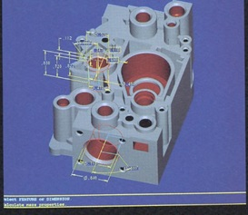
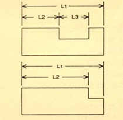
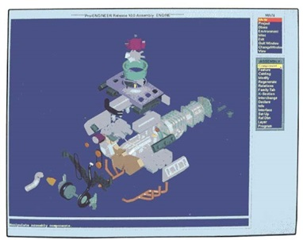
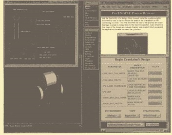
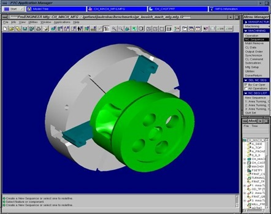
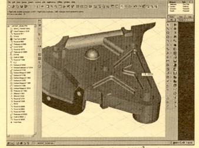

第16章：PTC
PTC(Parametric Technology Corporation)是由 Samuel P. Geisberg 博士于1985年5月创立的 SPG Consulting Corporation。他于1936年出生于俄罗斯圣彼得堡，并在列宁格勒大学获得数学博士学位，并成为该校数学教授。他于1974年与11岁的儿子移民美国。由于妻子在多个国防相关项目上的工作，他们六岁的女儿不得不留在俄罗斯，直到数年后才能加入他们一家。
盖斯伯格最初在Computervision工作，后来在Applicon工作。在这两家公司，他提出了一种基于实体几何和使用基于特征的参数化技术来定义零件和组装体的全新的CAD软件方法。当这些公司都没有同意资助他的提案时，他决定创办一家新公司来生产他正在考虑的先进设计软件。
读者不应该认为盖斯伯格是唯一一个研发这些技术的软件开发人员。马特拉·达塔视觉、英特格拉夫和其他一些公司已经开始实现Pro/ENGINEER最终采用的一些基本思想。PTC区别于这些其他供应商的是Pro/ENGINEER的整体完整性以及其适用于所有设计、分析和制造应用程序的单一数据模型概念，尽管这些要等到用户和竞争对手们清楚地认识到一段时间才能实现。
当Sam的兄弟瓦拉迪米尔（1980年从俄罗斯移民）建议Sam与一位名为Noel Pasternak的律师谈论建立和资助一家新公司时，PTC开始启动。Pasternak筹集了15万美元的种子资金，使Geisberg能够开始制作Pro/ENGINEER的原型。盖斯伯格坚持要求Pasternak个人出资2.5万美元。该公司于1985年5月成立。在1993年8月29日的波士顿环球报中，Pasternak被引用为说：“我认为，由于来自俄罗斯，Sam不确定谁是他的朋友，谁是他的盟友……他觉得如果我有一些钱，我会更努力地为他奋斗。”[1] 20多年后，Pasternak成为了公司的非执行主席。
总得来说，Adage、Charles River Ventures和其他公司从初创资金中筹集了约75万美元。关键步骤是建立一个能够完成Geisberg软件想法开发并把所得产品带到市场的组织。早期开发工作的大部分是由Geisberg和四五个同事完成的。Mike Payne在1986年3月加入PTC，并于一个月后成为开发副总裁，他曾在Prime Computer担任CAD/CAM研究和开发主管多年。
基本上是一名数学家和软件开发人员，Geisberg及其支持者相当快地意识到他们需要一个有更多管理经验的人来日常经营公司，因此公司在1986年12月聘用了Steven C. Walske担任总裁兼首席执行官。Walske于1978年获得哈佛商学院MBA学位，并在加入PTC之前担任过计算机公司的CFO。在他的领导下，该公司在12年内从零开始增长到超过10亿美元。
Walske加入公司后，Geisberg成为研发执行副总裁。六个月后，Dick Harrison被聘为销售副总裁，公司名称改为Parametric Technology Corporation。Harrison此前曾是Celerity Computing和Prime Computer的销售主管。
1987年中期，公司从Charles River Ventures[2]和其他机构筹集了额外的360万美元风险资本，并开始为Pro/ENGINEER的推出做准备。大约在同一时间，该公司开始向媒体展示软件的早期版本。包括CAD/CIM Alert和The Anderson Report在内的出版物对此印象深刻。虽然大多数CAD软件供应商都有一种首选的计算机平台，然后将软件移植到其他平台上，但PTC采取了在多个平台上同时开发软件的方法。最初，这包括来自Sun、DEC、Apollo、SGI和NEC的工作站。除了在DEC系统上使用VMS之外，PTC将UNIX作为其主要操作系统。虽然有说法称将有一个可以在IBM System/2 PC或Apple Macintosh上运行的版本，但PC版将要等到微软在1993年发布Windows NT。
根据Geisberg当时所说：“目标是要创建一个灵活的系统，以鼓励工程师轻松地考虑各种设计。并且设计更改的成本应该尽可能接近于零。此外，当时传统的CAD/CAM软件不切实际地限制了低成本更改，仅适用于设计工程过程的前端。”
在Pro/ENGINEER正式发布之前，软件的基本价格预计为12,500美元。整个套件包括大约10个不同的模块，包括基本素描、基于特征的建模、制图、装配建模、曲面建模、数据管理等。最终，这些模块以及许多其他功能将成为基本的Pro/ENGINEER产品的一部分。尽管所有建模都使用实体几何，但用户可以使用线框图像或隐藏线图像以及阴影图像。由于当时工作站的性能，大多数早期用户主要使用线框图像。
Pro/ENGINEER的Beta测试始于1987年9月，在底特律AUTOFACT的第一次公开演示于1987年11月举行。商业发货始于1988年1月。基本软件的价格为9,500美元，其中包括参数化几何创建、制图、装配建模和IGES 3.0。公司的初始分销计划是使用经销商（增值经销商或VARs）和OEM经销商。在产品推出时，PTC已经在美国拥有了四个经销商和两个日本经销商。计划在1988年底拥有50个经销商。很快，公司就在外部公司和内部直接销售力量之间产生了重大冲突。
Pro/ENGINEER的功能描述
虽然Pro/ENGINEER中的一些方面早在竞争软件产品中出现过，但在1987年晚些时候推出这个产品是这些功能首次作为一个单一的软件套件组合在一起，并且带有相对简单的用户界面。 Pro/ENGINEER早期开发的两个基本原则。一个是使用参数化的、基于特征的实体建模，另一个是这个软件套件中的所有应用程序都使用共同的数据结构。
虽然像Computervision的CADDS 4X和McAuto的Unigraphics II等竞争产品基本上是基于线框架构的，实体是作为一种额外的功能添加的，但Pro/ENGINEER从一开始就是实体-based系统。一切都是用双精度实体几何和NURBS曲面来完成的。
为了创建一个模型，用户通常是先创建对象的概要，然后通过空间平移或围绕中心线旋转将其转换为实体模型。还可以添加或从基本模型中减去其他几何形状。其中一些几何形状是以孔、凸起、肋骨等特征的形式出现的。
Pro/ENGINEER的一个关键特点是，随着模型的创建，软件记录了操作者所采取的每一个步骤，这被称为“历史树”。软件还记录了模型的几何属性，例如两个表面是否平行，或孔距离零件边缘的距离等等。用于定义零件的每个尺寸也都被记录了下来。如果用户在一个块中放置了一 个通孔，并且该块的厚度稍后增加，那么孔的长度将按比例增加。而对于旧版实体建模软件来说，用户会发现孔的深度仍旧停留在块的内部。
Pro/ENGINEER的一个早期优势，后来却成为一个问题，就是该模型始终是完全约束的。这意味着没有冗余的约束，也不能缺少任何完全定义其几何形状的信息。如果缺少关键的尺寸或约束，软件会提示用户这个事实，并且在提供必要的信息之前不会继续进行。
如果用户决定更改一个尺寸，软件将使用已保存的历史树来重新生成模型。对于小型模型，这几乎是瞬间完成的，但随着模型的变大，所需的时间也会显著增加。这些变化被纳入历史树中，因此随着越来越多的变化被进行，再次生成模型的时间也会增加。例如，如果最初在模型中放置了孔，并将其删除，每次重新生成模型时，软件将再次插入孔，然后将其删除。用户通过将模型的部分放置在单独的层上，并仅重新生成他们当前工作的层来解决这个问题。
零件设计被存储在单独的文件中。设计师可以将这些零件，包括一些定制的和一些标准的零件，组合成装配体。Pro/ENGINEER不会在组装模型中创建零件的副本，而是要引用这些单独的零件文件。如果部件随后发生了更改，新版本可在使用它的装配中传播。
约束和尺寸在装配件之间传递的事实，当时特别令人印象深刻。如果一个零件有一个投影适合插入到另一个零件上的插槽中，而且投影的大小和形状发生变化，当重新生成装配体时插槽也会发生变化。虽然一开始不明显，PTC软件的另一个强大之处是所有应用程序都使用同一个数据库。在Pro/ENGINEER软件套件中，当用户切换应用程序时无需将模型数据从一个格式转换为另一个格式。
公共数据结构使得PTC能够在软件模块之间实现双向关联。对实体模型的更改会导致相关图纸，分析模型和机床路径的更改，而对图纸的更改会更改导出该图纸的模型。用户可以决定是否激活此关联。
当Pro/ENGINEER推出时，最薄弱的方面可能是它无法在建立零件或装配体的模型之前创建工程图。许多项目需要简单的二维图纸。用户最终为这些任务获取了更简单的软件套件，例如AutoCAD，或者为Pro/ENGINEER图纸添加无法处理的细节。
Pro/ENGINEER的早期版本特别适合设计一组零件的情况，其中零件的一般形状并不改变，只有一个或多个关键尺寸。
显示详细信息
改变设计模式
Pro/ENGINEER的前两份副本于1987年9月以14,000美元的价格售给了迪尔公司，Dick Harrison负责销售。生产软件的交付从1988年1月开始。一年内，PTC向约150名客户出货近900份软件，潜在客户和媒体开始关注这个行业的新秀。根据安德森报告，AUTOFACT’88会展会公司展位前的通道都被挤满了人，自公司开始出货的季度起就实现了盈利。预计该公司在截至1989年9月的财政年度将有1000万美元的收入。（实际上，它在首个全年出货期间的收入为1100万美元，略高于预期。）
相当快地，PTC开始向Pro/Engineer软件套件添加应用程序，从生成有限元网格程序开始。到1989年初，这些软件包包括：
Pro/MESH-此软件支持从Pro/ENGINEER模型直接自动生成有限元分析的输入数据。负荷和边界条件直接应用于模型，当模型更改时，这些更改会应用于由Pro/MESH生成的数据。用户可以选择取消不需要的细节，例如螺栓孔螺纹。该软件与PDA Engineering共同开发。价格为4,000美元。
Pro/DETAIL-PTC相当快地意识到必须支持合理水平的生产绘图。绘图图像直接从Pro/ENGINEER-模型派生，因此对模型的更改立即反映在图纸中。当时可能独特的是模型和绘图之间的双向关系。不仅模型更改反映在绘图中，而且绘图更改也会改变模型。价格为3,000美元。
Pro/INPUT - 此模块可使用户输入IGES 3.0几何信息，并将该几何信息用作零件模型中的非参数特征或组装件的组成部分。价格为$2,000。
Pro/ASSEMBLY - 尽管基本的Pro/ENGINEER软件支持装配建模，但Pro/ASSEMBLY提供了用于处理大型装配的附加功能，包括层次链接布局、全局尺寸和参考平面等。价格为$2,500。
Pro/DEVELOP - 这是一个软件开发工具包，使程序员能够访问Pro/ENGINEER数据库。价格为$30,000。
该公司的销售策略结合了增值经销商、OEM代理商和直接销售。截至1989年初，40％的销售额来自国际经销商，而国内销售比例为25％的OEM、20％的VAR和15％的直接销售。早期的OEM合作伙伴包括Control Data Corporation和PDA Engineering。
安德森报告在1989年3月的文章中采访了几家公司关于PTC的报道，反馈非常积极。德尔公司的杰克·威利被引用说：
“Pro/ENGINEER是我迄今为止看到的最好的实体造模器的典范。该产品的强度在于机械特性和尺寸可调性的结合。这种组合的好处是用户界面更加友好，加上了智能几何数据库。”

在哈里斯公司和诺玛户外产品中，用户报告了类似的积极反馈。该通讯总结了其评估：“Pro/ENGINEER产品是真正的赢家……Pro/ENGINEER产品已经在市场上存在足够长的时间来暴露任何重大的技术缺陷，并且似乎没有任何问题。”[6]
OEM销售模式存在问题
在1989年中期，Auto-trol Technology也成为了一家OEM经销商。OEM和VAR之间的区别在于，OEM负责售前和售后技术支持和软件交付。客户实际上从OEM购买软件许可证，而PTC处理由VAR发起的订单。为承担这些责任，OEM获得了大幅折扣，而VAR则根据其销售额获得佣金。
从PTC的角度来看，这些OEM关系是启动Pro/ENGINEER销售的一种方式。OEM则将其视为扩大传统销售的一种方式。
Auto-trol是一个很好的例子。该公司在将先进的实体建模整合到其机械设计软件Series 7000中遇到了困难。机械软件组的市场经理Gary Germanis建议公司将Pro/ENGINEER作为Series 7000的前端转售，因为该软件具有强大的绘图和数控加工能力。起初，这是一个Auto-trol使用的销售策略，但收效甚微。1990年，该公司的重心转向在特定地理区域（如西海岸）销售Pro/ENGINEER自身的优点。
当Auto-trol发现自己与PTC的直接销售团队竞争时，问题是什么定义了由PTC自己的销售人员负责的重要客户。这一问题并未被事先解决，Auto-trol发现自己在做大部分账户开发工作，但随后PTC宣布这个潜在客户是内部账户。当两家公司在这个问题上对撞时，PTC在1991年决定终止所有OEM经销商合约，并提供这些公司成为更传统的VAR的能力。Auto-trol拒绝了这个提议。
PDA Engineering与PTC的关系比Auto-trol的持久。在PDA因一系列合同问题威胁要起诉PTC之后，两家公司于1990年5月扩大了协议，加入了一个联合开发的软件包P/CONCEPT，将PDA的有限元技术与PTC的Pro/ENGINEER结合起来。18个月后有消息称，两家公司签署了一个扩大的战略协议，使PDA的PATRAN 3软件能够直接访问Pro/ENGINEER数据。
Pro/ENGINEER- 真的吗？
1990年2月，计算机辅助设计报告的发行人史蒂夫·沃尔夫认为是时候看看Pro/ENGINEER是否真的可靠了。他对PTC在AUTOFACT’89上的高管Geisberg和其他人的言论感到震惊，他们试图将PTC定位为与行业领导者Prime Computer(Computervision)、Intergraph和SDRC相当的供应商。他进一步认为，Geisberg声称PTC将成为一个亿美元软件公司的说法有些牵强附会(虽然PTC在1998年才达到了十亿美元的市值)。

沃尔夫采访了许多Pro/ENGINEER的用户，并得出结论，虽然该软件具有许多有吸引力的功能，但远不像公司所声称的那样成熟。他最担心的是设计师使用这款软件创建复杂曲面的难度。沃尔夫认为，其他供应商在这方面走得更远。考虑到当前UNIX工作站的性能状况，人们还对Pro/ENGINEER处理复杂零件和大型装配的能力提出了质疑。这也导致具有100个特征的零件的再生时间慢至45分钟。沃尔夫还担心图16.3中所示的参数范围有所限制。
沃尔夫继续描述了一家矫正器制造商在尝试进行Pro/ENGINEER基准测试时遇到的问题。为了避免类似前景所遇到的问题，PTC的应用工程师接受了培训，尽可能使用标准演示。他们在1990年代广泛使用的一个演示是家用搅拌机。这些应用工程师接受了良好的培训，这些演示旨在展示Pro/ENGINEER最积极的特点，并避免任何问题。
PTC迅速获得市场动力
Walske迅速组建了一支富有进攻性的管理团队，狄克·哈里森负责销售，路易斯·沃尔普担任市场副总裁，迈克·佩恩负责开发，马克·加拉格尔负责财务。营收从1989财年（Pro/ENGINEER发货的第一完整年）的1100万美元迅速增长到1990财年的2540万美元，再到1991财年的4470万美元。
在这一过程中，该公司于1989年12月公开募股，每股12美元，主要是出于可见度和财务信誉而非为了筹集资金，因为一旦开始发货Pro/ENGINEER，PTC每个季度都是盈利的。在两个月内，股价上涨了一倍以上。有趣的是，该公司的两位早期董事之一，唐纳德·格里尔森曾负责GE的Calma业务，诺尔·帕斯特纳克是当地一位律师，18年后仍是PTC的董事会成员，帕斯特纳克是该公司的非执行董事长。
根据Volpe的说法：“竞争对手们把CAD/CAM采购决策定位为非常关键的战略决策，认为只应该选择老牌CAD/CAM供应商。当时的销售重点并不是技术，而是可信度，也就是说‘你会把你的CAD/CAM投资交给一个可能无法充分利用其技术而倒闭的公司吗？’”[10] 我亲身经历过这种潜在客户对于全新技术的犹豫，当时是在1990年担任Auto-trol的Pro/ENGINEER销售主管，尽管工程师天生保守，但是Pro/ENGINEER的销售却像火箭一样起飞。到1991年中期，该公司已经出货了3800个许可证，建立了一个令人印象深刻的第三方软件合作伙伴名单，并像钟表一样每六个月推出一次新版的Pro/ENGINEER。与行业传统的做法不同，PTC开始大力宣传每个版本的增强功能（从未考虑过修复缺陷）。例如，1991年3月发布的7.0版本被宣传为具有250个增强功能。
PTC推出Pro/ENGINEER软件套件的应用程序速度也开始加快。在1990年和1991年推出的软件包包括：
Pro/DRAFT-用于创建二维图纸并将文本和非关联几何图形添加到Pro/DETAIL图纸中。
Pro/FEATURE-此软件包使用户能够创建自己的功能并将其保存在库中以供以后使用。
Pro/SURFACE-早期版本的Pro/ENGINEER在曲面建模定义方面有些薄弱。Pro/SURFACE使用户能够将复杂的曲面建模添加到其模型中。
Pro/SHEETMETAL – 该软件使用户能够创建钣金件并准备零件加工输出。
Pro/MANUFACTURING – 早期的 Pro/ENGINEER 发行版设想使用第三方软件生成 NC 刀具路径。客户推动 PTC 开发其自己的 NC 软件，它可以直接使用
Pro/ENGINEER 数据。模型的更改可以迅速反映在制造数据中。然而，直到几个版本后，该软件才能达到行业的要求。
Pro/LIBRARY – 这是一个库，包含超过 20,000 种零件和特性，可并入 Pro/ENGINEER 零件和装配体中。
Pro/PROJECT – Pro/PROJECT 是 PTC 第一次尝试提供项目数据管理软件。很快就被 Pro/PDM 取代。
总的来说，PTC倾向于尽快发布新的应用程序，因为它认为尽快让用户使用，以获取反馈意见，知道需要改进什么，比等到市场部门说软件包已经包含了客户所需的一切更好。这导致一些关键的应用程序，例如数控制造在准备不好的情况下就发布出去，从而给客户带来了无法接受的麻烦。在其他情况下，这种策略效果不错。虽然Pro/ENGINEER的基础定价保持在9500美元，但典型的座位价格在用户添加完整个解决方案所需的应用程序后在14,000至20,000美元之间。计算机和电子行业是PTC的主要收入来源，60％的销售来自这个领域。航空占10至15％，汽车占5至10％。除了上述与PDA Engineering的合作伙伴关系外，PTC还与Swanson Analysis（ANSYS）、结构研究与分析公司和Rasna密切合作。这三家公司都是有限元分析软件公司，其中Rasna有所不同，它专注于设计优化。正如下面所述，PTC最终将收购Rasna，而达索系统最终将收购SRAC。根据《安德森报告》1991年6月刊所述：
Parametric Technology Technology 于1988年一经推出，就受到极高的关注，迄今为止它的热度仍未有所降低。其参数化几何学如今仍然受到用户的青睐，就像三年前一样。可以说，参数化建模已经成为行业标准，因为在许多用户的CAD系统规格单上都有该项。其他供应商争相纷纷添加一些参数化功能的行为，展示了PTC对工具使工作更轻松的用户期望提高到了何种程度。
甚至Steve Wolfe 在1991年底也成了一名信徒。在《Computer Aided Design Report》的12月刊中，Wolfe写道：
“Parametric Technology Corporation 的 Pro/Engineer（注：此为PCC的以前名字）已经成为三维机械设计的最热门产品………Parametric Technology 的惊人增长趋势不应该让任何人感到意外。”
Wolfe继续列举了这种态度背后的原因。
- PTC每年推出两个版本的Pro/ENGINEER，而竞争对手只能发布一个版本。
- Pro/ENGINEER是机器无关的，PTC似乎没有偏爱的平台供应商。
- 新版本在所有平台上的发布时间大致相同。
- 该软件外观精美，菜单使用有意义的工程术语。
- Pro/ENGINEER只适用于实体建模，而竞争系统则沿用陈旧的线框架和曲面功能。
- PTC的销售团队努力工作并出色完成了销售任务。
在适当的时间和地点
早期至中期的1990年代是PTC快速增长的时期。许多大型用户组织已经投资了数百万美元在第一和第二代CAD系统上，并开始意识到所安装的限制。这导致许多用户重新评估他们与当前供应商的关系，并四处寻找是否有更好的选择。PTC是新的竞争者，有着新的技术和资源，于是每个人都想与其交朋友。
仅在 1992 年中期，该公司就从桑迪亚国家实验室获得了 800 个席位订单和 2000 个席位订单从卡特彼勒。后者是与 EDS 的 Unigraphics Solutions 子公司进行了激烈的竞争。这些订单后来还包括康明斯发动机和福特汽车公司的其他大订单。该公司的收入和利润年年翻番，而 PTC 的股票在 1991 年年初和 1992 年年中之间涨了三倍，安装席位数量已经上升到 8300。
《工程自动化报告》的 1992 年 10 月刊试图从不同角度看待 PTC 的增长。它指出了许多竞争对手在挣扎中公司成功的原因。当时的作者写道：“当机会敲门时，Parametric Technology 就在那里迎接。为了了解 PTC 之所以如此成功，你需要看 CAD 行业的历史，以及当公司在 1985 年成立时技术所处的位置。”此文继续解释称，竞争系统如 CADDS、BRAVO、Unigraphics、DDM、CADAM 和 CATIA 在一些情况下可以追溯到 1960 年代末期。这些程序通常是从二维绘图为主的应用程序发展而来，后来添加了三维和实体数据。它们基于大型机或小型计算机，需要相当数量的软件来弥补早期硬件产品和操作系统的缺点。该软件依赖于专有操作系统，并携带前推代码以支持不再对新买家感兴趣的传统硬件。在大多数情况下，这些系统难以维护和增强，尤其是难以从一种计算机平台移植到另一种计算机平台。在某些情况下，代码的一部分仍以汇编语言编写。
PTC 试图通过创建针对联网 UNIX 工作站特征调整的新技术来获取竞争优势。 Pro/ENGINEER 从一开始就实现了双精度数据库，使用高度可移植的 C 编程语言编写，并利用了大多数 UNIX 操作系统提供的最新功能。唯一的例外是支持 DEC 相对成熟的 VMS 操作系统。但即使在这里，PTC 也支持 DEC 的单用户工作站，而不是其多用户小型计算机。
正如前面所述，结果是建立在单个数据库、参数化定义几何、基于特征的实体建模以及应用程序之间的双向关联性的软件产品线。在后一种情况下，下游应用程序改变原始模型几何形状的程度可以由用户或系统管理员控制。所得到的系统具有一个用户界面，融合许多最新的屏幕菜单技术和彩色编码反馈机制。它专门设计为在分布式工作站网络中运行，并在所有支持的平台上并行实现。
到 1992 年底，Pro/ENGINEER 发布了第 10 个版本，有另外700项增强和支持超过25个应用程序包。一些最近的增加包括 Pro/MOLDESIGN、Pro/CABLING、Pro/DIAGRAM 和 Pro/HARNESS-MFG。越来越多，PTC 提供了一个几乎完整的设计、草图和制造解决方案，除了分析和一些特殊领域（如高端可视化、快速原型和文档）之外，越来越不依赖第三方应用程序。该软件主要以套装的形式销售，例如生产套餐，其中包括 Pro/ENGINEER、Pro/ASSEMBLY、Pro/DETAIL、Pro/FEATURE、Pro/INTERFACE 和 Pro/PLOT，售价为 18,000 美元。
参数化设计存在的问题
《工程自动化报告》的文章还开始探讨了一个问题：用户需要多么精心地规划设计工作，才能避免在设计发生重大变化时不得不重新开始。一个基于重新生成历史记录树的纯参数化设计技术的问题是，随着几何形状的增加，它依赖于先前创建的几何形状。这种方法被描述为父/子关系，只不过可能会有许多级深度。如果删除或更改某些方式的父级元素，它可能会对子级元素产生意想不到的影响。在极端情况下（有时甚至不是特别极端的情况下），用户被迫完全重新创建模型。
避免这种问题的方法是仔细规划设计，预先定义哪些主要元素将依赖于其他元素。一些人认为，用 Pro/ENGINEER 进行设计更类似于编程而不是传统的工程设计。竞争对手，特别是使用名为“变化设计”的替代技术的 SDRC，声称他们的软件避免了这种情况。
Pro/ENGINEER 的另一个问题是，当处理大型装配件或非常大的单个零部件时，性能会降低，这问题也开始让用户感到担忧。这些模型可能需要大量的时间来加载（从磁盘内存中检索并准备进行交互操作），并且在进行更改时重新生成需要相当的时间。更快的计算机系统有所帮助，但是用户开始构建越来越复杂的模型。模型大小的增长速度超过了最新计算机的速度范围。
在接下来的几年中，PTC将投入大量的开发资源来解决这两个问题。
PTC成熟为一家公司
PTC在1992年第四季度的收入增长了97％，达到3250万美元。我对公司的未来感到非常热情，并预测PTC将在1995年成为一家50亿美元的公司。我很接近，因为该公司在截至1995年9月30日的财年实现了3.94亿美元的收入，接下来的财年实现了6亿美元的收入。[15]
我不是唯一一个迷上PTC的作家。在1992年11月的《计算机辅助设计报告》上，史蒂夫·沃尔夫（Steve Wolfe）表示：
“PTC成功的秘诀并不难理解。它提供了一个三维CAD/CAM系统，比现有系统要容易使用得多。它的尺寸驱动建模能力、使用特征而不是草图元素以及快速交互响应都有助于产品的易用性。”[16]
一项负面方面是，PTC正逐渐在其销售团队中赢得过度激进的声誉，尤其是随着越来越多的销售工作由公司自己的人员处理。如果销售人员觉得负责选择CAD供应商的人倾向于竞争对手，那么他们经常会拿起电话给公司总裁打电话。这些电话中很多都不太讨人喜欢，会涉及到这些低级别人员的问题。结果是很多工程经理即使PTC公司的系统可能是一个很好的解决方案，他们也不愿意跟PTC打交道。十年后，PTC仍在努力向市场证明自己是一个“更友善、更温和”的供应商。
PTC在经销商中也有不好的声誉，很难共事。因此，Pro/ENGINEER的经销商公司中有很多人员的变动。其中一个例外是加拿大经销商Rand Technologies，在美国有很多分公司。实际上，它是一家名为Rand A Technology Corporation的公司的运营部门。Rand成立于1986年，是Computervision软件的经销商，由Brian Semkiw领导。它销售许多相关软件包，以及运行这些程序的硬件。
到1994年初，这家公司在加拿大上市，其中38％的总收入来自Pro/ENGINEER软件和相关的PTC应用程序。它声称已经销售了全球安装的所有Pro/ENGINEER座位的7％。该公司表示，其成功是由于为客户提供高水平的支持。但是即使与PTC的这种紧密合作关系也最终会炸裂，两家公司将以大量仇恨分道扬镳。
爆炸性增长继续
从1993财年的报告的1.63亿美元，到1997财年的8.09亿美元，PTC的收入激增。在此期间，公司的收益从4350万美元增加到2.19亿美元，销售的Pro/ENGINEER软件座位数超过10万个。公司似乎没有做错任何事情。需要强调的一点是，这些收入涉及纯软件以及一些咨询服务。公司的主要竞争对手传统上销售硬件，无论是自己制造还是从计算机和其他硬件制造商OEM。随着计算机硬件市场价格的下降，这些公司很难增加收入，甚至无法维持历史水平。当PTC将其软件移植到运行Windows NT的PC上时，公司并不在意Pro/ENGINEER座位的硬件成本已经显著下降，因为无论它是运行在40,000美元的UNIX工作站上还是运行在4,000美元的PC上，它都能获得同样的收入。实际上，如果有什么区别的话，价格更低的硬件趋势会增强PTC的地位，因为客户可以在软件上使用更大的预算，因为他们在硬件上的开支更少。
谈到Windows NT，当微软于1993年5月24日宣布其新操作系统时，PTC是第一批跟进的软件公司之一。该公司表示，当操作系统在7月份开始运输时，它将在Windows NT上运行Pro/ENGINEER。该公司没有完全遵守那个日期，但确实开始在Compaq DESKPRO 5/60M上运输Windows NT版本的Pro/ENGINEER。由于PC之间存在微小差异，PTC计划在给出硬件和软件的建议配置之前，在每个首选配置上测试该软件。
到1993年底，数百万美元以上的订单迅速涌现。特别是，安装了几个Pro/ENGINEER座位以评估技术的公司喜欢他们所看到的，决定将该软件推广到其整个设计人员。一个很好的例子是Paccar，Kenworth和Peterbuilt重型卡车的制造商。他们从Kenworth开始使用了7个座位，喜欢所看到的，并随后订购了另外63个座位。

根据1993年11月的工程自动化报告：
“现有PTC客户升级他们的安装速度令人印象深刻。我们在这里看到两个信息。一方面，这些公司发现Pro/ENGINEER是一种有效的工具，他们愿意投入越来越大的资金购买额外的软件和硬件来运行它。但第二个问题是，存在巨大的技术需求，以前的软件供应商无法满足这些公司的需求。这些传统系统的供应商为PTC提供了机会，而PTC正在利用这个机会。” [17]
清洁其制造软件
PTC在1993年底开始发布Pro/ENGINEER Release 12，包括一些草图和设计增强功能，支持27个独立应用程序。
然而，最重要的增强功能是对Pro/MANUFACTURE进行了大量的改进。尽管该软件的初始版本具有一些强大的功能，特别是与Pro/ENGINEER数据库的双向关联性，但使用起来很麻烦，不能提供足够直接创建和编辑刀具路径的能力。这导致了一些PTC客户的近乎暴动，尤其是卡特彼勒。
Pro/MANUFACTURING的Release 12版本通过定制呈现给用户的菜单选项数量来改进了软件的用户界面。例如，如果用户正在进行三轴铣削，只有适用于该类型加工的命令会出现在屏幕上。从根本上讲，软件被重新编写以更好地反映制造工程师的工作方式。
另一个重要变化是用户现在可以更好地控制加工操作，而不是依赖于自动生成的刀具路径。实际上，制造工程师可以完全跳过自动生成工具路径而交互式地创建它们。系统将这个交互式的刀具路径设定记忆为一个特征，如果模型形状改变，则可以自动更新交互式的刀具路径。
PTC还添加了一个Pro/PIPE模块，使设计师能够向装配模型中添加管和管道组件。该软件包括一个具有设计规格的组件库。如果用户在装配中插入一根铜管，软件将检查以确保它不超过该尺寸管道规格中的弯曲限制。
1994年初推出了第13版，其中包括Pro/Manufacturing的更多增强功能，包括跨多个表面加工的能力。该软件还整合了额外的决策逻辑，例如根据板厚使一系列加工操作相互依存。结果是如果板材很薄，则会打孔，但如果板材厚度超过指定的数量或孔径不正确，则会用火焰切割。
随着第13版的发布，还推出了几个新的应用程序。
Pro/FEM-POST。该软件使用户能够使用Pro/FEM创建有限元网格，将数据发送到FEA程序，接收结果并使用Pro/FEM-POST查看结果，然后根据这些结果更改模型几何形状。实际上，用户可以在整个流程中都使用Pro/ENGINEER，除了实际的分析步骤外。
另一个新应用是Pro/SCAN-TOOLS，它允许用户从三维扫描设备中获取数据，并将该数据转换为Pro/ENGINEER兼容的曲面建模。由于许多工业设计仍然是通过创建粘土或木制模型完成的，所以该软件填补了自动化设计过程中的重要空白。Pro/SCAN-TOOLS也可用于逆向工程现有零件。
在1994年和1995年期间几乎每个月，PTC都宣布与夏普公司、惠而浦、福特汽车、戈卢普•施耐德、曼内斯曼、Steelcase、伊顿、辛辛那提米拉克龙、AMP Incorporated等公司签订了百万美元合同。
PTC的管理变动
PTC开始了一个新的发展阶段，成为了一家重要的技术公司，1994年8月，史蒂夫·沃尔斯克取代萨姆·盖斯伯格担任公司董事会主席，迪克·哈里森晋升为总裁兼首席运营官。盖斯伯格担任首席科学家职务一段时间后就退休了。许多人认为可能会得到首席运营官职位的卢·沃尔普于当年晚些时候离开了公司。
与此同时，公司每六个月就推出新的Pro/ENGINEER软件版本，这继续为大多数行业观察家留下了深刻印象。以下是计算机辅助设计报告1994年12月号的一篇典型评论：“如果Parametric Technology不跟上技术趋势，就可能失去优势，走向专业CAD供应商的道路。然而，目前为止，它没有表现出来。它不断改进其核心软件和相关应用程序。它似乎比其他高价竞争对手更适合抓住从Unix工作站转向Windows NT和个人计算机硬件的趋势。它正在积极拓展海外市场，并拥有一个可观的经销商渠道，每年销售价值4000万美元的新软件。没有老牌CAD供应商能够做到这些事情，更不用说做到做得好了。Parametric Technology正在成为市场领导者，因为它拥有更好的软件，比竞争对手更快地增加所需的改进，积极销售，与硬件趋势保持同步，并提供优秀的应用工程师来帮助培训客户。让我们继续感到困惑的是，其它大型CAD供应商为什么不作出类似的回应。”
创建低成本替代方案
1995年1月，PTC发布了Pro/JR的重大产品公告。其目的是为大约60万潜在用户提供低成本解决方案，这些用户需要比低成本机械绘图软件提供的功能更强大，但又不需要完整的Pro/ENGINEER软件套件提供的全部功能。Pro/JR是Pro/ENGINEER Release 14的子集，可在UNIX和Windows NT版本中使用。最初的价格为8000美元/个节点许可证和9000美元/个浮动许可证，可在网络上从一台计算机移动到另一台计算机。
相对于Pro/ENGINEER的基础价格为9500美元，这个价格似乎有点高，但是除了这个基础价格，人们需要很多可选模块才能使Pro/ENGINEER成为可用的解决方案。 PTC将这些模块打包成称为Basic Package和Advanced Designer package的套装，价格分别为16000美元和20000美元。
Pro/JR包括Pro/ENGINEER和Pro/DETAIL的子集以及Pro/FEATURE和Pro/INTERFACE提供的多个功能以及Pro/PLOT的版本。总的来说，Pro/JR在当时的一个合理价格提供了一系列不错的功能。 PTC将其描述为50％的Basic Package，价格为50％。（其他消息来源称，功能为40％，价格为40％）。 Pro/JR使用了简化版的Pro/ENGINEER菜单结构。不适用的功能被删除，使菜单更易于使用。提供了开发人员工具包，售价6000美元，使第三方软件公司能够将其Pro/ENGINEER应用程序调整到Pro/JR。
起初，似乎PTC已经推出了一个吸引人的产品，填补了行业产品供应的重要空白。有大量的组织要么无法负担每个设计工程师的全功能Pro/ENGINEER许可证，要么还没有准备好进行软件所必需的广泛的设计流程改变。 Pro/JR显然比Autodesk的AutoCAD Designer产品更具集成化，后者售价6750美元，比Bentley的MicroStation Modeler具有更大的机械设计能力。 公司显然知道即将推出SolidWorks和Intergraph的Solid Edge，这两个软件包将有助于创造中档解决方案的新市场。
那么，Pro/JR.为什么没有引起市场的火爆和激动呢？
- 可能是价格定得略高。这类应用的最佳价格可能更接近于5000美元而非8000美元。此外，每个副本年度全面维护和支持的1400美元被认为相当高。
- 产品的名称选择可能是一个错误。工程师不想被分配使用“junior”等级的产品。
- 现有Pro/ENGINEER客户对Pro/JR.的使用受到限制，因为虽然使用Pro/JR.创建的数据可以被导入和使用Pro/ENGINEER，但是Pro/JR.无法导入和使用Pro/ENGINEER数据。这更多是PTC的营销决策而不是技术限制。
- PTC并没有提供可选的Pro/JR应用程序。如果客户想要加工在Pro/JR中创建的零件，则必须购买与Pro/Jr兼容的新的第三方软件包，或者将数据导出到Pro/ENGINEER中。
- Pro/JR仅通过公司的经销商渠道销售，这导致VAR和PTC的直接销售团队之间存在销售冲突。
- 公司没有提供培训。唯一的选择是经销商提供的培训计划或自我培训。
PTC通过收购扩张
1995年2月份的《工程自动化报告》中，我注意到PTC已经累积了超过2.3亿美元的现金储备，我不会惊讶于看到他们使用这笔钱来购买产品数据管理或电子设计软件供应商。公司的行动比我预期的早，并且方向与我预期的不同。
该公司的第一步行动是在1995年4月12日宣布其计划以3350万美元的现金收购Evans＆Sutherland的工业设计和可视化软件业务部门。该交易包括E＆S的概念设计和渲染系统（CDRS）和3D油漆产品，以及一直负责这些产品的员工。这个团队每年的软件收入约为800万美元。关键产品显然是功能丰富的CDRS工业设计和造型软件包。许多PTC客户已经使用Alias和Wavefront的软件产品，这两家公司最近都被硅谷图形公司收购。
E＆S成立于1968年，由大卫·埃文斯博士和伊万·萨瑟兰博士共同创立，两人当时都是犹他大学的计算机科学教授。最初的计划是开发可用于计算机模拟应用程序的图形硬件。这将公司带入了开发和生产用于飞行模拟系统的图形硬件的业务。 E＆S随后与英国模拟公司Rediffusion建立了合作关系，这导致该公司独家获得Rediffusion商用飞行模拟器的可视化系统提供权。今天的许多商用飞行员都是在这些系统上接受培训的。E＆S在1978年上市。
萨瑟兰只在该公司工作了几年，而埃文斯则一直担任首席执行官直至1994年。在80年代，公司扩展到新的图形市场，包括一般可视化、工业造型和实体建模，曾经在1981年收购Shape Data和该公司的Romulus软件包。CDRS于1990年推出，虽然它是一个视觉上令人印象深刻的软件包，但从未销售得很好，部分原因是由于缺乏充分的销售和营销组织，但更重要的是，它的价格过高。最初，CDRS仅在E＆S工作站上可用，完整的单用户系统售价25万美元。随后，CDRS被移植到其他UNIX工作站上，但仍然售价55,000至85,000美元，只是软件。3D Paint可视化软件仅在SGI的高端Onyx工作站上可用，售价为15,000美元。
詹姆斯·奥伊勒于1994年加入E＆S，担任总裁兼首席执行官，他很快开始重新聚焦公司的核心竞争力：仿真培训，高端可视化和数字影院。由于Rediffusion不再是客户，企业销售额下滑，E＆S在1994年遭遇了十年来最大的亏损。CDRS和3D Paint不符合Oyler关于公司的计划。
预计CDRS以及3D Paint软件将为PTC提供一套集成的工业设计和产品工程解决方案套件。虽然Pro / Surface中的曲面几何能力对许多设计任务来说是足够的，但CDRS在整体曲面创建和编辑功能方面要远远优于Pro / Surface，特别是在汽车车身设计中使用时。将CDRS技术集成到Pro / ENGINEER产品中的工作最终花费了比最初预计更长的时间。
PTC进行这次收购还有一个别有用心的动机。福特汽车公司是CDRS的主要用户，福特目前正处于选择主要CAD供应商的过程中。PTC正在竞争这个业务，并且人们不得不认为该公司认为将CDRS添加到其产品提供中会提供竞争优势。但这个策略并没有奏效，福特最终选择了SDRC作为其主要CAD供应商。
托马斯·詹森博士于1984年从犹他大学获得博士学位，此前于1978年加入E＆S。他于1993年成为该公司设计软件组的总经理。收购完成后，詹森从盐湖城搬到Waltham，成为PTC的研发副总裁。詹森似乎从未与马萨诸塞州的开发人员合得来，并在1998年离开了公司。他随后成为think3的研发副总裁，该职位一直担任到2003年左右。
在几个月内，PTC 将 CDRS 和 3D Paint 重新包装成 Pro/ENGINEER 的选项。CDRS 变成了 Pro/DESIGNER，售价为每份 12,000 美元或不到 E&S 收费的一半。基于 IGES 的中性格式用于在 Pro/ENGINEER 和 Pro/DESIGNER 之间传输数据。对于在独立模式或与其他 CAD 解决方案中使用 CDRS 的客户，PTC 提供了售价为每份 25,000 美元的 Pro/CDRS。其他 E&S 软件也被重新包装为 Pro/PHOTORENDER、Pro/ANIMATE 和 Pro/PERSPECTA-SKETCH。Pro/ENGINEER 和前 E&S 软件的捆绑包以极具吸引力的价格 20,000 美元每份提供。其中一个问题是，E&S 软件只能在 IBM 和 SGI 工作站上运行，要等一段时间才能在其他 UNIX 工作站上运行并在 Windows NT 下运行。
CDRS 收购几个月后，PTC 进行了一个更为引人注目的举动，以大约价值 205,000,000 美元的 3,800 万股股票收购了设计分析和优化软件供应商 Rasna 公司。Rasna 公司成立于 1987 年 11 月，由 George Henry 和几位曾在加州圣何塞的 IBM 阿尔玛登研究中心工作过的同事创立。该公司的 MECHANICA 软件与传统的有限元方法软件包不同，它使用一种称为几何元素分析（GEA）的技术。GEA 模型使用的元素数量明显较少，这些元素可以包含相当复杂的几何形状。在机械分析社区内，这些被称为 p 元素，其中 p 代表多项式。
Rasna 公司的 MECHANICA 软件的一个关键方面是，它不仅可以处理零部件和装配体的结构、热和运动分析，还可以用于优化单个零部件的形状。最初，Rasna 与 Autodesk 密切合作，向 AutoCAD 用户提供这项技术，但很快就将重点转向了 Pro/ENGINEER。截至 1995 年，MECHANICA 过程如下：
- 在 CAD 系统（如 Pro/ENGINEER、CADKEY、AutoCAD 或 I-DEAS）中定义基本零件几何形状。
- 将几何形状输入到 MECHANICA 模块之一 - Applied Structure 中。
- 用户使用自动化和交互技术创建了一个p元素模型。通常，Rasna模型的元素数量约为传统FEA模型的1/50。
- 承载和边界条件被应用。
- 用户定义哪些部分可以更改，例如模型的特定部分的宽度和/或厚度，以及应该优化什么，例如重量或应力。
最小和最大值也在此时定义。
- 软件会迭代分析，直到找到该零件的最优形状。在1990年代中期，这些运行通常需要在UNIX工作站上花费数分钟到几个小时的时间。传统的有限元分析模型可能需要在更大更昂贵的计算机上花费几倍的时间来执行分析。
- 调整后的几何图形被导出到原始CAD系统，并且模型会交互式地更改以匹配优化的形状。
除了处理基本线性分析的Applied Structure外，Rasna还提供了热力学、动力学、非线性和屈曲模块。在收购时，该软件能够在UNIX工作站、Windows NT和数台超级计算机上运行。
可用的软件可以在MECHANICA和多个CAD软件之间传输几何图形，但是Pro / ENGINEER似乎是首选的CAD系统。这是一款昂贵的软件，单站许可证价格起价于16000美元。它可以在一次设计任务上为自己赚取回报，通过减少零件的重量 - 特别是如果该零件是以百万计制造的。
在1995年1月的《工程自动化报告》中，我提供了关于Rasna的最新情况，并建议该公司（当时预计收入为3500万美元）将在年底之前上市。当Rasna选择被收购而不是上市时，我问David Pidwell[25]为什么选择被收购而不是进行公开招股。他回答说：“在销售和产品领域都有很大的协同效应……如果我们不加入他们，我们最终会与他们竞争。” Pidwell接着说，与一家快速增长的公司合并（当时PTC的增长率约为45%）类似于进行IPO，但不会带来IPO的烦恼和支出。他把它描述为“即时IPO”[26]。
在被收购时，Rasna拥有超过1200个客户，其中大约一半使用的是Pro/ENGINEER以外的CAD系统。 PTC的初步想法是该公司仍将向这些用户出售MECHANICA。但这并没有真正发生，原因有两个：1）PTC认为在销售Pro/ENGINEER时，MECHANICA是一个有竞争优势的卖点，特别是针对像SDRC这样有自己的分析软件的公司。2）PTC很快在收购后解雇了大部分Rasna销售人员。尽管该公司在1995年9月为MECHANICA软件签订了一份价值190万美元的McDonnell Douglas合同，但这样的项目很少。 PTC预计其自己的300人销售团队将在1996财年销售约6,000万美元的分析软件。但这被证明是过于乐观的，但10多年后，Pro/MECHANICA仍然是PTC软件产品线的重要组成部分。
PTC公司升入更高的档位
到1995年中期，PTC似乎很快将成为CAD行业的主导公司。它正在快速增长，而它的竞争对手大多处于困境中。由于PTC从未建造或转售计算机硬件，因此不像竞争对手（如Computervision，Applicon，Intergraph或Auto-trol Technology）会经历撤出的痛苦。Pro/ENGINEER在机械设计软件领域创造了一个范式转变，这是竞争对手刚刚开始追赶的变化。
PTC的收入不仅以惊人的速度持续增长，而且由于许多因素的影响，公司也相当盈利。
随着公司收入的增长，公司的人员开支没有相应增长。在1990年代中期，PTC是一个非常精简的运营。
公司以其销售团队的规模和侵略性为傲。计划到1995财年结束时拥有375名销售人员（实际上他们最终达到400名）。这些人负责公司收入的90％以上，而经销商处理余额。两个销售团队共计在1995年销售了15,900个Pro/ENGINEER座位，平均价格为18,100美元。正如之前提到的那样，销售团队的侵略性既有正面影响也有负面影响。 PTC的管理层意识到了这个问题，并已开始讨论缓和措辞。
PTC的销售人员有效地使用了一种被称为“游击销售”的技术。这个概念是向大企业内的一个部门销售几个Pro/ENGINEER座位，然后利用这些系统的成功最终让客户承诺将软件作为公司标准。 Autodesk也非常有效地使用了这种技术。
虽然面向特性的参数化设计首先引起了潜在用户的注意，但单一的综合数据库用于多种应用程序最终被认为同样重要。
由于 Pro/ENGINEER 最初就实现了跨平台，PTC 比竞争对手花费的精力少得多。
总的来说，PTC 与第三方软件供应商有着良好的关系，即使收购了 Rasna 以后也如此。
该公司鼓励用户提交增强请求，并设立用户委员会来协助审查这些请求。制造软件委员会在公司必须做出的行动中发表了特别响亮的意见。
Pro/ENGINEER的客户开始减少或甚至消除制图作为设计过程的一部分，并将设计数据直接传输给制造供应商，如模具厂，以Pro/ENGINEER模型的形式。要求供应商也使用Pro/ENGINEER。
与其他软件公司倾向于将总收入的20％或更多用于产品开发和软件维护不同，PTC只花费了6.5％。到1995财年末，PTC仅有340人从事产品开发，而销售和营销组织则拥有近1,100人。
总的来说，PTC每六个月就会推出新的Pro/ENGINEER版本，通常还会增加大约500个增强功能和几个新应用程序。第15版没有太大变化，尽管它被延迟了几个月，以便加入Pro/DESIGNER。尽管基本界面自软件首次发布以来并没有改变太多，但PTC确实努力使其更有效。例如，第15版允许用户中断零件的设计，创建一个新的定制特征，然后将该特征插入模型中。当时，这是一项令人印象深刻的能力。该公司还开始更加关注处理大型装配过程中出现的性能问题。
Pro/JR在1995财年销售额缓慢增长，只有500万到700万美元，但公司希望在1996财年达到2000万到3000万美元。10月份，该公司将该软件包的价格从8000美元降至4995美元。显然，PTC开始对新的中档竞争性解决方案感到担忧，例如Intergraph的Solid Edge，价格为5995美元，最初定价只有3995美元的SolidWorks和价格为6250美元的Autodesk的Mechanical Desktop。
PTC也开始更加关注产品数据管理问题。Pro/PROJECT变成了Pro/PDM，其中PDM代表Parametric Design Manager。与Pro/PROJECT不同，Pro/PDM不需要使用活动的Pro/ENGINEER许可证。PTC认为Pro/PDM是项目级或部门级数据管理软件，并且在当时，他们可以与提供企业级数据管理应用程序的其他软件供应商（例如Sherpa和Workgroup Technology）协同工作。
到1995年中期，PTC在全球6200多家组织中安装了超过40,000个Pro/ENGINEER和Pro/JR程序。他们每个季度约增加600位新客户和4000个席位。在《Engineering Automation Report》的8月号中，我写道：
PTC计划在本十年末成为10亿美元的公司。如果市场潜力像他们所相信的那样真实，目前没有竞争对手足以阻止公司实现这一目标。公司增长不太可能完全来自机械设计。我们认为，PTC需要成为快速增长的PDM市场的更重要因素。
公司1995财年的收入为3.94亿美元，比上年增长48％。
1995年9月，埃德温·吉利斯加入PTC担任首席财务官。他之前曾在莲花担任同样的职位。除了Walske和Harrison，其他关键高管包括Marc Delude，市场营销高级副总裁，Thomas Jensen博士，研发高级副总裁，以及Michael McGuinness，销售和分销高级副总裁。公司董事会成员包括唐纳德·格里尔森，他之前负责通用电气的“未来工厂”计划（参见第11章），以及哈佛商学院教授、企业再造领域的权威人物迈克尔·波特。
销售和低成本产品环境的变化
1996年，营收仍在以50％以上的速度增长。季度销售量迅速接近6,000个席位，季度营收超过1.5亿美元。到1996年中期，PTC已经拥有600多名销售人员，并计划在97财年结束时增加至900人。目标是在下一年将收入增加到约8.5亿美元。瓦尔斯克认为，通过高管理人员与直接销售人员的比例，可以保持如此庞大的销售队伍的生产力。在PTC的情况下，这个比例大约是一对一。
拥有这么庞大的销售团队往往会减少个人销售领域的大小，这意味着PTC的销售人员正在与越来越小的客户打交道。这导致了与经销商的竞争加剧，因此PTC决定改变与其VAR的关系。除了总部设在加拿大的Rand Technologies[28]外，VAR已不再能够销售Pro/ ENGINEER，而只能销售更名为Pro/ MODELER的Pro/Jr。现在，它是一个更完整的产品，其中包括几个应用程序包，包括Pro/MILL、Pro/TURN、Pro/FEA和Pro/RENDER，每个售价为3,000美元至4,000美元。[29]
几个月后，命名方式再次改变，这个软件产品线被重命名为PT / Products，其中Pro/MODELER变为PT/Modeler，Pro/MIL变为PT/Mill等等。还有一个名为PT / Basic Library的库，其中包含34,500个ANSI紧固件，售价仅为1,000美元。1996年秋季推出的PT / Modeler版本基于Pro/ ENGINEER Release 17，并提供Windows 95和Windows NT版本。这个软件的UNIX版本不再可用。[30]它的价格再次在1997年初下降，这一次只有2,995美元，某些可选模块的价格也降低了。从个人包裹的价格清单中提供折扣捆绑销售。全面的设计和制造模块套件只需6,995美元即可使用。
PT / Modeler的一个主要问题是，即使它仅在基于Windows的PC上可用，仍然使用与Pro/ ENGINEER相同的面向UNIX的用户界面。在PC上使用价格适中的设计软件的用户期望应用程序具有基于Windows标准的用户界面。这对于PT / Products软件包销售的影响有多大不清楚。可能更重要的是，这个软件只由经销商销售，他们无法销售Pro/ ENGINEER。这与PTC直接销售团队产生了冲突，因此PT / Products线可能从未得到必要的公司支持以实现成功。
除了降低PT/产品套餐的价格，PTC再次改变了其分销策略。公司的直接销售团队被授权销售这些低成本的套餐，这使PTC与其经销商的关系比以前更紧张。此外，听到公司的首席执行官贬低中档CAD软件的概念并不令人鼓舞。在1997年4月10日的分析师会议上，瓦尔斯克评论道：
我们对低端产品的看法没有改变。它们提供了Pro/Engineer的大多数但并非全部功能。我们的客户需要端到端的设计自动化。我不认为SolidWorks会填补这个空缺。SolidWorks（以及所有其他低价系统）都存在根本性的缺陷。
在会议上回答另一个问题时，瓦尔斯克表示：我们的主要竞争对手不是SolidWorks，而是Autodesk。
专注于汽车市场
1996年年底，唐·亨利奇（Don Henrich）被晋升为市场部高级副总裁，接替离开公司成为分析软件公司 Moldflow 总裁的马克·德卢德（Marc Delude）。与此同时，来自世界各地的公司继续签下价值数百万美元的合同，包括松下通信、SKF集团、三洋和洛克希德·马丁宇航公司等。公司在1996年财年结束时实现了6亿美元的营业额，比上年增长了52％。
这个营业额代表了23,000个软件席位，平均价格为20,400美元。

该公司计划在发布18版时推出令人兴奋的新软件包。名为Pro / ENGINE，旨在自动化约一半汽车或卡车发动机设计工作。 Pro / ENGINE结合了典型的Pro / ENGINEER功能和新的Web技术。该软件包由三个主要组件组成，如图16.5所示：
- 可在Web浏览器上使用的发动机设计教程
- 一系列“向导”，可促进每个设计步骤
- 更改并存储发动机早期设计构思的功能
将 Pro/ENGINEER 用于实际的零部件和装配件建模。 PTC 发展了不同零部件之间的所有参数关系，因此当修改如活塞冲程之类的值时，该更改将在整个发动机模型中传播。该软件包的网络方面也旨在单独向客户提供Pro/ Web Modeler。
通常，这种设计自动化的水平是大型用户为自己所做的。有趣的是，看看软件供应商对其软件更详细的了解是否能够抵消客户对其工作流程更详细的了解。 PTC宣布1997年是“汽车年”。公司的目的是开发可用于更广泛渗透汽车设计行业的应用程序。正在开发与Pro/ENGINE配套使用的Pro/BODY包。
潜在客户希望PTC将通过CDRS收购的表面技术与Pro/ENGINEER更紧密地集成，而不是使用Pro/DESIGNER的当前增强的IGES接口。 Pro/ENGINEER技术模型围绕应用之间的数据关联概念构建。潜在客户希望PTC将通过CDRS收购的表面技术与Pro/ENGINEER更紧密地集成，而不是使用Pro/DESIGNER的当前增强的IGES接口。 CDRS的基本架构与Pro/ENGINEER大不相同，使得E&S和PTC软件的集成比最初设想的更加困难。
公司在汽车工业上的关注开始在1997年中期得到回报。在之前的几个月里，PTC宣布了来自宝马，菲亚特，法拉利，丰田，现代，PSA和大众的大量订单。这些订单中的许多涉及汽车发动机和变速箱的设计，其中Pro / ENGINEER的实体建模功能特别高效。
当我在1997年5月访问PTC总部时，公司正在准备为Pro / ENGINEER的首批客户版本进行发货。PTC组建了一支由20名应用工程师和内部顾问组成的团队，其中许多人具有设计引擎的丰富经验，并让他们花费10周的时间开发设计一个由280个部件组成的发动机模型的详细程序。实际上，他们拆解了几个四缸，16气门，直列，双凸轮轴发动机，将它们分解为单个零件级别。
在访问期间，我被告知Pro / ENGINE的售价为每个主要发动机类型的站点许可证为50万美元。这个价格包括大量的咨询服务 - 或许有60％的成本预计将由专业服务组成。
PTC在AEC市场上奔跑
1996 年 6 月，在 A/E/C 系统会议上，我参加了一个名为“2001 年，CAD 奥德赛”的主题演讲小组。在我的演讲中，我说未来五年内的主要业务发展之一将是 PTC 进军 AEC CAD 市场。会议结束后，一名 PTC 高管走近我，问道：“你这个说法的来源是什么？”我回答说，我没有任何 PTC 计划的内部消息，这只是我个人的看法。然后，他邀请我尽快访问 PTC 的总部，最好在下周前。
在那次会议上，我了解到该公司正在比我预期的更早地朝着这个方向发展。事实上，PTC 正在以略高于 3200 万美元的价格收购一家名为 Greenshire License Company 的英国公司开发的三维面向对象建模和可视化软件 Reflex。这个软件是由一小组领导人 Jonathan Ingram 和 Gerard Gartside 开发的，他们之前曾涉及其他建模包，包括 RUCAPS 和 Sonata。
Sonata 在 1992 年初被卖给 Alias Research，但这个建筑设计软件的营销从未起步，Alias 在当年结束销售之前就中止了销售。Reflex 是一种相当新的技术，仅在英国的一些项目中使用了几次，但 PTC 认为它可以成为一个全面过程工厂和建筑设计产品线的基础。[34]
几个月后，Pro/REFLEX 推出。像 PTC 推出的许多其他新软件包一样，这个产品起初的功能相当有限，其主要目的是收集潜在用户的反馈。Pro/REFLEX Release 2.0 是一个更高效的软件模块套件，于 1967 年中期发布。在很大程度上，Pro/REFLEX 专注于建筑模型的可视化。
此软件的关键组成部分是Pro/REFLEX VEL（虚拟元素语言），可用于创建面向对象的建模元素。这些元素可以根据其用途的不同情境以不同的呈现方式进行展示，例如在工厂模型中作为三维对象或在流程图中作为二维示意图。该软件仅在SGI UNIX工作站上提供，承诺在1997年末提供Windows NT版本。
从回顾来看，PTC为相对不成熟的Reflex软件支付了过高的价格，并极大低估了创造具有竞争力的建筑和工厂设计产品线所需的努力。这是不幸的，因为当时PTC拥有成为市场主要因素的财务资源，而Intergraph，当时最大的工厂设计软件供应商，正在经历其自身业务的困难变化。
该公司在1996财年对收入进行了超过3200万美元的相关收费，与此次收购或基本上与其支付的Reflex费用有关。Pro/REFLEX从未起步，最终PTC将Reflex技术出售给了总部位于德克萨斯州的设计建筑公司The Beck Group，在那里今天它是DESTINI或DESign ESTimating Integrated INItiative的核心。涉及该努力的一些PTC人员进而开始了Revit的开发，该公司是一家开发建筑建模软件的公司，随后被Autodesk收购。
PTC和Pro/ENGINEER的成熟
1997 年初，PTC 推出了 Pro/ENGINEER Release 18，对软件的用户界面进行了重大增强。当 Pro/ENGINEER 在 1988 年首次发货时，其用户界面是当时领先水平的，几乎所有的交互都是通过屏幕菜单完成的。对于许多任务，用户会在菜单上选择一个文本项目，然后会出现第二个菜单，有时会出现第三个菜单。随着后续的软件发布，越来越多的功能被添加到这个级联菜单方案中，有时，用户寻找的单个命令可能位于六到七个菜单级别之内。在大多数情况下，选择替代命令需要用户逐级向上返回此菜单链。
到 1997 年，竞争系统比 Pro/ENGINEER 提供了更简化的用户界面。PTC 认识到需要改变其软件以符合这些更新的行业技术，Release 18 代表了这个方向的开端。根据 Dick Harrison 所说，Release 18 只代表了公司计划在这个领域中的 25% 左右，预计在同年晚些时候推出的 Release 19 将包含计划更改的其余部分。
到 1997 年初，PTC 的销售额的超过 25% 是基于 Windows NT 的，在许多情况下，Windows NT 版本的软件的性能优于在 UNIX 工作站上运行的相同软件。由于其销售额的很大一部分是基于 UNIX 的，PTC 在采用 Windows 用户界面标准时受到限制。
Release 18 还包括一个新的应用程序，Pro/TOOLKIT，这是对 PTC 更早的用户开发程序 Pro/DEVELOP 的重大改进。
Pro/TOOLKIT使第三方软件开发人员能够写入Pro/ENGINEER数据库，并像Pro/DEVELOP一样读取这些数据。此时，互联网开始变得越来越重要，PTC推出了Pro/WEB PUBLISH，使Pro/ENGINEER用户能够生成可在大多数Web浏览器中查看的输出。
Pro/INTRALINK-管理设计数据的新方法
长时间以来，PTC的客户一直在寻找能够有效管理Pro/E产生信息的软件产品。由公司如Sherpa和Metaphase提供的企业解决方案涉及过多的定制编程，安装这些系统可能需要四到五年时间。等到这些系统运行起来时，业务环境经常已经发生变化。然而，另一方面，由Workgroup Technology和Adra提供的部门级解决方案未能解决许多大型公司想要解决的企业级问题。PTC在这个领域的自身尝试，如Pro/PROJECT和Pro/PDM，也远远未达到用户的期望。
约在1995年中期，PTC意识到其客户需要比目前可用的更好的数据管理工具，并且如果PTC可以提供这些工具，将为公司带来实质性的增量业务。第一步是开发一种信息导向的编程环境。这个名为“Delta”的类似Java的应用程序编程接口(API)支持600多个不同的功能。
PTC利用Delta开发了一个名为Pro/INTRALINK的新的客户端/服务器数据管理解决方案，处理传统的产品数据管理（PDM）功能、配置管理和软件源代码控制。Pro/INTRALINK于1997年中期推出，使用共享和本地数据库的组合来管理这些任务。基于Oracle软件的共享数据库（COMMONSPACE）负责跟踪所有设计迭代、关系和配置信息，而本地数据库（WORKSPACE）使每个用户能够独立工作。提供了工具，使每个用户的WORKSPACE可以访问COMMONSPACE中的数据，并提供更新共享数据库的信息。大部分情况下，Pro/INTRALINK的功能对用户是透明的。只需保存设计文件即可更新WORKSPACE数据库，关闭设计会话即可更新COMMONSPACE。
当PTC审查其用户的PDM实施状况时，其中一个明显的问题是这些组织花费了大量的精力将各种系统连接在一起。公司意识到，摆脱这种困境的方法之一是使用企业内部网络和Web技术，以消除将桌面Pro/ENGINEER用户与企业数据库连接起来所需的大部分工作，并为组织中通常使用各种PC和工作站的其他人提供访问这些信息的途径。
Pro/INTRALINK建立了一个操作环境，使得每当保存Pro/ENGINEER对象时，WORKSPACE数据库都会更新所有相关的信息。该过程的一部分导致创建存储在WORKSPACE中的对象的小位图图像（今天我们称之为缩略图）。当用户浏览他们的WORKSPACE时，这些位图几乎瞬间显示，极大地方便了用户查找他们所寻找的内容。
Pro/INTRALINK的初始实现支持大多数UNIX工作站和Windows NT的Intel和Digital Alpha版本用于服务器和客户端软件。客户端软件也支持Windows 95。这个软件的一个负面之处是高昂的成本。Pro/INTRALINK的标价为5000美元，PTC建议每个Pro/ENGINEER席位购买一个软件副本。显然，可以获得数量折扣，而且不太可能有很多公司以任何大量购买许可证的标价付款。
很不幸，从Pro/PDM到Pro/INTRALINK的旧版数据移动软件直到1998年才推出，并且经过一段时间，Pro/INTRALINK才包含了Pro/PDM具备的所有基本数据管理功能。
PTC收购Computervision
到1997年，对PTC和其他行业人士来说，数据管理正变得越来越重要。Walske和Harrison认为，通过收购或合并另一家公司，他们可以启动PTC在这个不断增长的市场中的参与。他们与荷兰的Baan Company进行了一些相当严肃的讨论。那个夏天，Computervision的首席执行官Russ Planitzer会见了Walske和Harrison，并建议PTC考虑收购该公司的CADDS业务部门。他们反驳说，PTC最好收购整个Computervision。
为了将此放入透视中，在1997年后期，PTC的增长率下降到30％，大约是一年前的一半。然而，在不到十年的时间里，该公司凭借其几何建模能力成为CAD行业的主导供应商。当时，传统的软件价格似乎即将面临巨大压力，而行业正在开始巩固。
达索系统已经收购了SolidWorks和EDS，Intergraph也宣布他们将合并他们的机械设计软件活动。《工程自动化报告》认为PTC需要扩大目标，并在重要的收购上花费其5亿美元的储蓄。他们选择的这个公司让大多数行业观察家感到惊讶，并且它对PTC来说结果更加令人惊讶。
1997年10月，我应邀前往麻萨诸塞州贝德福德的Computervision总部预览一款名为DesignWave的中档软件包（见第12章）。该软件包将在11月在底特律的AUTOFACT展会上推出，我为1997年11月的《工程自动化报告》写了一篇关于这款新软件的文章，并广泛分发于会议上。在11月4日上午9:00，我在一个相当拥挤的Computervision DesignWave正式介绍的简报室里，当Wayne George走进房间并宣布：“在今天早上8点，Computervision宣布被Parametric Technology Corporation收购。”这个简单的声明结束了新闻发布会和所有关于DesignWave的讨论。
PTC同意以4.9亿美元的价格收购Computervision，其中2.6亿美元为股票，还要承担大约2.3亿美元的债务。Computervision靠近破产，其债券以面值的50％左右出售。PTC还承担了Computervision的未偿租约义务。这对PTC的成本比公司可能预期的要高得多。在宣布收购时，PTC表示，在完成收购后，将裁掉Computervision的1,200名员工中的约500名。
Computervision的销售已经急剧下降，但年销售额仍在3.5亿美元左右。以1.4倍的营业收入收购一家拥有优秀客户群和一些相当不错的技术的公司可能是不过分的。问题是PTC将如何将人员、软件产品和客户群与其现有业务整合？此时，Computervision的旗舰设计软件是CADDS 5。到1997年，它主要在Sun Microsystems工作站上销售，尽管该公司拥有大量的遗留专有系统安装基础。Computervision还在其他领域中收购了许多其他软件产品，包括MEDUSA、VersaCAD、Calma的DDM和DIMENSION III，以及用于制图和电子设计的软件包。在PTC介入之前，后两个领域的软件产品已经售出。
PTC最初对Computervision感兴趣的主要原因是后者与大型组织实现所谓的电子产品定义（EPD）方面的工作。这涉及设计和制造软件（CADDS 5），装配管理（CAMU或并行装配和模拟）和产品数据管理（OPTEGRA）以及强大的咨询支持以帮助实现目标。
尽管竞争对手积极推销，Computervision仍然成功地保留了一系列重要的EPD客户，包括空中客车工业、劳斯莱斯飞机发动机集团、菲亚特、PSA标致雪铁龙、通用电气和雷神公司。PTC长期以来一直希望复制Computervision与这些主要客户取得的成就。该公司在PDM领域尤其艰难，并且增加Computervision资源预计将在构建大客户业务方面特别有用。OPTEGRA被预计为企业级PDM能力，以补充PTC当前销售的部门级软件。
CADDS 5不同于Pro/ENGINEER之处在于它支持混合建模（线框和曲面以及实体）以及明确的设计，而不仅仅是参数化设计。它是一款相当优秀的软件，但由于Computervision的财务困境似乎在前景的技术问题上占优势，因此没有得到应有的关注。在短期内，PTC计划继续开发CADDS 5，并表示他们甚至可能会扩大这种努力。该公司还计划开发CADDS 5和Pro/ENGINEER之间直接的转换器。当时，我的观察是，在几年内，这两种产品线将开始共享技术，甚至开始混合成为一个单一的产品套件。几年后，当Unigraphics Solutions收购了SDRC及其I-DEAS产品线时，这就发生了。
一个主要问题是PTC是否会推出最近宣布的DesignWave软件，因为它将直接与PTC的PT/Products中档CAD/CAM套件竞争。在宣布时还有一个未知因素，那就是CV一直在资助的一家名为“风寒技术”的公司正在开发新的面向互联网的PDM软件。后者位于明尼阿波利斯，由Jim Heppleman等前Metaphase人员于1996年10月创立。Windchill最终将形成一个新一代的PDM工具，供Computervision和PTC用户使用。
当时我的结论是，如果像PTC这样的公司没有出现，就很难确定Computervision能否独立生存。一旦消除了一些组织上的冗余，收购对PTC来说是一笔有利可图的交易。我认为这对那些同时使用CADDS 5和Pro/ENGINEER或仍在使用CADDS 4X但一直不愿升级或转向新供应商的客户尤其有益。在两家公司中，它们安装了超过20,000个用户的高端设计软件的座位超过190,000个。这是一个在这个快速发展的行业中非常出色的存在。收购Computervision于1998年1月12日完成。
Windchill改变了PTC的方向
到1998年初，PTC对Computervision的一些收购方面开始形成轮廓。要恢复其销售增长势头，公司很明显必须成为大型全球企业的主要工程和制造技术提供商，特别是那些在汽车和飞机行业的公司。Computervision为PTC提供了进入一些大型客户的机会，如空中客车工业[38]，使PTC能够更有效地与其他全球企业供应商竞争，包括Unigraphics、Dassault和SDRC。
为了追求这个市场，PTC计划建立一个基于Computervision特别成功的类似的大客户销售和支持组织。该团队的任务是专注于合并后公司的前20个客户，并直接向PTC的高层管理层汇报。
1998年1月的财务电话会议中，公司明确表示未来几年PTC的最重要的发展将是加强对产品信息管理（PIM）解决方案的重视。在短期内，Pro/ENGINEER用户将被销售Pro/INTRALINK，而CADDS 5用户将继续使用Optegra进行这些应用程序。PTC已经开始讨论将这些内容与Windchill所开发的新技术联系起来。Steve Walske将Windchill描述为“一颗未经雕琢的钻石”。
完成收购之前，Jim Heppleman访问了PTC，并向Harrison和其他人描述了Windchill的开发战略。他们对Heppleman提出的想法产生了兴趣，随后从Windchill的创始人和员工手中购买了该公司的未被Computervision所有的部分，并成为PTC的子公司。Walske的反应是“运气比聪明更重要”。
关键的Windchill开发人员，包括John Gibson、Jim Schoenberg和John Houston留在了该团队中，而Windchill的首席技术官Jim Heppleman则成为了PTC的高级副总裁。负责PTC的PIM活动的高级副总裁Jim Baum保留了对Pro/INTRALINK和Computervision Optegra系列的数据管理元素的责任。Wayne Collier在《工程自动化报告》上评论道：“Parametric为Computervision支付的全价钱似乎是有价值的：除了CV客户群之外，它还获得了Windchill的技术珍宝。”
当时有两个Windchill的产品正在开发中。NetFactor是一个广泛使用的Webbased Java软件环境，具有保管、文件管理、生命周期管理和工作流功能。Product Center是一系列垂直应用程序，如变更控制和配置管理。在完成收购之前，Computervision已在其一些重要客户中测试该软件。PTC计划将一些客户添加到测试计划中，并计划在1998年6月发布该软件。
Windchill软件本身是一项有趣的开发。然而更有趣的是，PTC将此技术描述为未来公司潜在进军企业资源计划（ERP）市场的基石。根据Engineering Automation Report“这是一个有趣的想法。大多数ERP供应商，如SAP、Oracle和J. D. Edwards，是从财务角度来看待ERP的。另一方面，PTC将从产品设计和PDM角度处理。”
PTC高管们认为，在接下来的几年里，该公司的业务将分为三分之一的CAD和三分之二的信息管理。Walske反复强调，机械CAD业务正在成为低增长产业，未来在管理设计信息，而不仅是创建设计方面。该公司重视这一领域的一个例子是建立了一个专门的销售团队来推广信息管理软件产品和服务。最初，它有大约30名专门的销售代表，计划到1998年中期结束时增至60到75名。几个月后，在圣迭戈的Kalthoff国际用户论坛上，PTC的营销人员在谈论ERP市场的规模是PDM市场的30倍，是整个CAD行业规模的四倍多。
在上述电话会议上，Walske被问及Computervision新的DesignWave中档包将会发生什么情况，该中档包于宣布收购当天推出。Walske重申了他此前的担忧，他并不认为这是一个实质性的中档市场。尽管存在这种担忧，Walske计划为DesignWave的开发和营销提供更多资金，并给予负责这一项目的团队证明他的错误的机会。
1998年第一季度，PTC报告收入为2.64亿美元，仅比去年的2.5亿美元增长了6％。早期的结果被重新调整以包括Computervision的数字。很明显，尽管PTC由于收购而看到了收入的增长，但Computervision的业务仍在持续下降，抵消了Pro / ENGINEER销售的增长。 尽管如此，PTC现在是首家10亿美元CAD软件公司。
未来看起来前景光明-暂时
第19个版本标志着Pro / ENGINEER开发战略的重大变化。此前，PTC推广其每六个月就能推出新软件版本的能力。 Release 19减缓了这一步伐，公司转向了每十个月的升级周期，测试站点在一般发布之前约六个月收到新软件。 尽管比以前少了，但它仍然比大多数竞争对手做得更好。初定在Release 19中的许多用户界面更改被推迟到Release 20。
PTC移动缓慢的领域之一是将Pro / DESIGNER纳入Pro / ENGINEER产品套件中。收购E＆S的CDRS三年后，这个软件仍然作为单独的产品销售，具有自己的面向图标的菜单结构和独立的数据库。虽然曲面建模形状可以轻松地从Pro / DESIGNER移动到Pro / ENGINEER，但如果需要进行曲面建模形状的更改，则必须在Pro / DESIGNER中完成，然后重复数据转换。这是可行但有点笨拙的。
到了 1998 年中期，PTC 所采取的措施似乎都正确，能够将公司推上一个更高的技术和商业成就的层次。总体来说，将 Computervision 合并到 PTC 的运营中进行得不错，许多高级的 Computervision 员工在合并后成为了这个合并公司的同等职位的员工。很快，PTC 决定不再将 Computervision 的业务作为一个独立的实体运营，而是将其全部整合到一个单一的组织中。
PTC 的高级副总裁 John Stuart 强调，先前的 Computervision 产品，如 Medusa 和 CADDS 5，将继续得到积极支持和发展。计划是好的，但细节在其执行过程中并不总是如公司所预期的那样发挥作用。PTC 的财年 1998 年销售额达到了约 11.6 亿美元。这使 PTC 成为 CAD 行业中最大的公司，而在收入方面，也成为世界第五大独立软件公司。公司现在拥有超过 4,700 名员工。
PTC 远未完成收购业务。公司接下来感兴趣的是 Control Data Systems 的 ICEM Technology 部门。这个总部位于德国法兰克福的部门以其出色的曲面几何和逆向工程软件（ICEM Surf）而广泛应用于汽车行业的客户，如奥迪、宝马、福特和通用。对于 PTC 来说，挑战在于将 Pro/ENGINEER、Pro/DESIGNER（前 CDRS）、CADDS 5 和 ICEM 的曲面几何能力融合在一起。ICEM 似乎从未符合公司的 MCAD 商业模式，至 2002 年中期，该业务仍每年产生超过 1,100 万美元的收入，被以 1 倍的营业收入售予管理层，售价为 1,060 万美元。
在 1998 年中期，Windchill 是最受矚目的項目。為了理解這種興趣，需要意識到早期的商業 PDM 和 ERP 解決方案大多是在主機或小型機上實現的。隨後切換到客戶端 / 伺服器計算，大量的努力投入到提供可以在各種客戶端和伺服器平臺上運行的軟件上：PC、UNIX、Macintosh 等。由於客戶經常更改要支援的平臺，尤其是客戶端（桌面）機器，這些系統大多難以實現。許多用戶最終花費的實現服務費用比軟件本身還要多。其中一個結果是，許多公司從未走出試驗階段，而那些走出試驗階段的公司，發現他們的系統很難適應不斷變化的業務需求。
在 1998 年中期，PTC管理層對Windchill的熱情狂烈，其中沃爾斯克宣稱，在三年內（即2001年），PDM領域將產生 PTC 總收入的三分之二。最終成績是23％左右，這個數字在接下來的幾年中只增加到約35％。
當互聯網和 World Wide Web 成為重要技術時，大多數現有 PDM 和 ERP 系統的供應商都以不同程度的成功將自己的產品適應了新環境。Windchill 與當時的幾乎所有競爭對手不同於，這個軟件從一開始就是基於利用新一代基於 Web 的軟件工具和概念的。 PTC 推廣這種方法比試圖將這些新概念添加到遺留信息管理解決方案中更具有效性。不同之處在於Windchill是以 Web 為中心的，而不僅僅是 Web 啟用的。
整個Windchill概念採用了三層架構，用戶通過標準Web瀏覽器（如Internet Explorer或Netscape Navigator）與系統通信。這導致了應用層，該應用程序通常由標準 Web 服务器（如Microsoft Internet Information Server或Netscape Enterprise Server）組成。應用層將HTML頁面提供給用戶的Web瀏覽器，或下載Java小應用程序以完成預定義的功能，例如填寫表格或將文檔路由到另一個團隊成員。第三層由數據本身構成，該數據存儲在像Oracle 8這樣的對象啟用的關係型數據庫中。
原始的NetFactor软件模块发展成为了PTC称为Windchill Foundation的产品。它最好的描述是将三层架构联系在一起并为PTC或用户开发的应用程序提供起点的面向对象的粘合剂。Windchill Foundation的企业许可证价格为25万美元。第二个构建块是Windchill信息建模器，一个提供应用程序开发环境的价值1万美元的程序。PTC还提供了两个应用程序，Windchill文档管理器，每个命名用户价格为800美元，Windchill配置管理器，每个命名用户价格为900美元。PTC当时声称已经与空客和Sun Microsystems达成了数百万美元的交易，并且还有20多个类似规模的前景。
仍然不清楚PTC计划如何积极开拓ERP市场。在首次推广这个想法不到六个月之后，公司似乎在后退其最初的立场。我仍然对这个想法充满热情，并写道：
“PTC以工程设计和产品制造的思维方式进入ERP市场。该公司知道，对于设计工程师的物料清单与制造或采购所看到的东西有很大的不同。 以设计为中心的ERP解决方案将为客户提供他们今天真正没有的选择。它可能不适用于所有人，但是PTC的战略将为用户社区创造更广泛的选择。”
与此同时，DesignWave仍然是公司产品线中的一部分，并且似乎正在获得比在Computervision下可能获得更多的开发和营销支持。PTC为中档系统设立了一个独立的业务部门，将DesignWave的主要推动者Jon Stevenson任命为该组的高级副总裁，直接向Dick Harrison汇报。这个业务部门还负责营销现有的PT / MODELER软件包，到1998年中期已经销售了超过15,000份。 DesignWave的价格为3,495美元，而PT / MODELER的价格为2,995美元。

与此同时，PTC 并没有忘记 Pro/ENGINEER。Release 20 在1998年中期进入了预生产测试阶段，采用了全新的用户界面，利用了新的菜单栏和其他特性，这些特性用户已经通过使用 Microsoft 的各种 Windows 操作系统熟悉了。此前，PTC 开发了 UNIX 版本的软件，然后将其移植到 Windows，但仍然看起来像 UNIX 程序。Release 20 改变了这种方法，现在 Pro/ENGINEER 看起来更像一个 Windows 程序，并且该版本也被实现在公司仍然支持的 UNIX 工作站上。
Release 20 还结合了一个名为 Intent Manager 的新草图工具，该工具有助于定义约束几何。当用户草绘 2D 型面时，软件会自动确定约束和尺寸，并在型面上显示这些内容。另一个新的功能是能够在零件和装配的 3D 模型上附加注释。当用户对模型进行缩放或旋转时，这些注释保持其原始方向，并始终对用户可见。
一个晚上的蹦跶
在1998年7月1日，PTC宣布了截至6月30日第三财季的初步业绩，这严重让股东失望。这是公司历史上首次季度营收实际下降，从1997年的2.49亿美元下降至1998年的2.45亿美元。公司声称，巨额订单的延迟是造成此差距的主要原因。其中一些订单在季末之后很快就到货，包括长期关系客户如劳斯莱斯航空发动机公司，它订购了270万美元的Pro/ENGINEER和Windchill软件。
次日，PTC的股价下跌了35％，到了月底，已经下跌近60％，每股仅为14.19美元。这是PTC历史上漫长而痛苦的一部分，它仍在从中恢复。
1998年中期，有许多因素影响了CAD行业和PTC：
- 中档系统在几年内发展出了几何建模和绘图生产力水平，而PTC花了十年才实现。许多潜在客户对这些较低成本系统提供的性能感到满意。
- Windows NT成为了技术操作系统的选择。超过50％的Pro / ENGINEER出货量现在是针对该软件的此版本。当有人只花费$ 4,000至$ 6,000购买了具有出色图形的高端PC时，他们不愿意为软件支付近$ 20,000。
- 几年前，竞争产品如CATIA，Unigraphics和I-DEAS无法做到Pro / ENGINEER所能做的事情。到1998年中期，这些其他软件包已经显着改进，并在某些情况下进展超过了Pro / ENGINEER。PTC可能已经太长时间地控制了其研发投资。该公司的软件开始显得有些过时，特别是对于其Windows基础系统而言，其看起来和感觉起来像是UNIX，直到Release 20。
- 公司越来越专注于信息管理，不仅仅是设计创建。IT解决方案是更难的销售，需要更长时间才能完成。不幸的是，Windchill仍然是一组技术，需要客户付出太多的努力才能安装并成为其运营的主流的一部分。
当PTC宣布对其900人的销售团队进行重组时，这并不令人意外。在收购Computervision后，PTC意识到其历史上的“一刀切”销售管理模式不再适用，特别是对于大型战略客户而言更是如此。因此，该公司转向了一个四个层次的销售结构，每个层次都有自己的管理组织。
- 大客户 - 设立了一个独立的销售组织，约有100名客户经理负责与公司的300个最大客户和潜在客户开展业务。大客户销售人员负责这些客户的所有PTC产品。
- 主流客户 - 大多数销售人员继续负责销售Pro/ENGINEER和相关软件产品和服务的领域责任。但明确排除了Windchill产品线。
- Windchill - PTC继续专注于组建一个特定的销售和支持团队，旨在在现有Pro/ENGINEER用户群和使用竞争设计系统的客户中争取Windchill PLM业务。一个典型的Pro/ENGINEER用户需要处理两个销售人员，一个负责Pro/ENGINEER，另一个负责Windchill。
- 小账户- 当PTC公司刚开始时，其销售的高比例是通过各种经销商进行的。到1996年，这已经降至公司收入的10%，并且如前所述，PTC改变了其经销商协议，这些公司不再能够销售Pro/ENGINEER，而仅限于PT/Modeler。唯一的例外是Rand Technologies，其继续向现有客户销售Pro/ENGINEER。在一项重要举措中，PTC和Rand签署了一项多年协议，根据该协议，Rand将成为除未风险系统以外的所有PTC产品在北美和欧洲收入不足1000万美元的企业的主要分销商。
《Engineering Automation Report》评论道：
“……与Rand的协议意义重大，因为单个的庞大销售组织通常在同时试图与大型全球企业建立有意义的长期关系的同时销售不同软件产品的个别副本面临困难。Rand本身将使用“业务伙伴”的另一层经销商或者小型供应商。原先在面对小型客户的PTC销售人员将被重新分配到其他三个组织中，而我们预计Rand将在未来几个月内进行大量的员工招聘。此外，曾经销售PT/Modeler和DesignWave的约100名独立经销商仍然将承担这个职责，但尚不清楚PTC将投入多少精力来扩大这个群体。” [51]
重组的一个结果是，在1999财年上半年，PTC从其销售和市场组织中裁减了300多人。另一方面，公司开始扩大其专业服务组织（PSO）。截至1999财年底，公司拥有近5000名员工。这远远不是PTC重组其销售组织寻求回归增长轨道的最后一次。与Rand的协议已经多次更改。首先，上限增加到5000万美元，然后排他性被取消，Rand获得了向所有企业销售的授权，除了PTC的200个最大帐户。两个公司之间的关系继续恶化，到2003年，Rand几乎退出了作为Pro/ENGINEER的经销商的业务，并成为Dassault Systemes的子公司，负责重新销售CATIA。
重新回到正轨
为了重新获得以前的增长势头，PTC所采取的第一步措施就是放弃PT/Products软件（包括PT/Modeler），并用一种名为Pro/ENGINEER-Foundation的产品来替代它们。客户只需支付5995美元，就可以获得功能齐全的Pro/ENGINEER软件，可用于零部件和装配设计、制图、物料清单生成、逼真可视化和数据转换。与PT/Products不同的是，客户可以在基础包上升级到PTC的任何其他应用程序。现有的PT/Products用户可以免费升级到Foundation或DesignWave。[52]
Foundation发布后不久，PTC就推出了Pro/DESKTOP，它基于DesignWave构建，但具有类似于Pro/ENGINEER的内部模型拓扑结构。这旨在实现两个软件包之间更好的数据移动。实现这一目标的工具称为联想技术总线(ATB)。它使得两个软件包可以共享几何图形和拓扑结构，而无需将模型从一个数据库转换到另一个数据库。Pro/DESKTOP的价格为每个许可证3495美元，可以直接打开Pro/ENGINEER文件，并像使用Pro/DESKTOP创建的模型一样使用这些模型。计划是在1999年初，Pro/ENGINEER用户也可以使用Pro/DESKTOP和CADDS 5模型。DesignWave因此停止了销售。[53]
1999年初，PTC的Windchill战略变得更加清晰。公司开始意识到Windchill客户需要技术和业务管理支持，以便有效地使用Windchill。当PTC收购Computervision时，继承了一个大量咨询服务组织，但这个组织无法满足所有服务的总需求。公司开始与外部管理咨询公司合作提供这些服务，最初是计算机科学公司、普华永道和安达信（后来更名为埃森哲）。
风智团队认为三项原则影响了公司对PDM的广泛概念：
- 在大型组织中，单一数据结构或模式不能满足企业内所有个体群体的需求。
- 企业级信息系统最好采用互联网和Web标准来实施。
- 大多数公司不想替换其现有的数据管理解决方案，而是希望将Windchill作为伞型技术，安装企业级应用程序，然后将现有的商业和自定义应用程序链接到Windchill基础架构。
这是一条复杂的信息，PTC很难向潜在客户传达这一信息，部分原因是这是企业级IT信息，而大多数PTC的销售人员更习惯于与工程管理人员谈论产品设计。尽管如此，到1998年底，已经有50个Windchill试点项目。一个主要问题是让公司从试点阶段过渡到完全的企业级全面推广。随着Windchill开发中特定应用程序（如产品配置、制造过程规划和供应商管理）开发所需资源的逐渐增加，发生了一个微妙的变化。此外，公司越来越少地谈论追求ERP市场，而更多地谈论与领先的ERP软件包进行接口。
收购步伐继续
PTC并没有停止收购。1998年10月，公司收购了InPart Design，该公司开发了DesignSuite，这是一个基于Web的信息服务，旨在成为三维机械零件数据的存储库。InPart使用Pro/ENGINEER创建其零件数据库，并以Pro / ENGINEER、IGES、STEP和AutoCAD DXF格式分发此信息。客户使用专有的客户端程序检索零件轮廓，可以将其合并到CAD装配体设计中。PTC用价值约3800万美元的600,000股股票支付了InPart。
1999年1月21日，公司宣布计划收购Division Group，该公司是可视化、仿真和集成工具的供应商，价格约为4800万美元的股票和现金。这大约是Division当前收入的4.5倍。Division总部位于英国布里斯托尔，最初开发和销售工具包，以便实施类似虚拟现实的可视化软件。在收购前两年，该公司改变了重点，开始销售实际的应用程序，如dV / MockUp，一种虚拟原型和可视化软件包。
1998年9月，Division宣布计划收购圣地亚哥的一家小型软件公司ObjectLogic。这笔交易于1999年3月完成。随后，PTC提供了该公司的主要应用程序dV/ProductView。后者使用户能够使用传统的Web浏览器查看、标记和传播在广泛的CAD系统上生成的产品数据。
PTC发布的新闻稿提到了该公司看到的将Division的应用与PTC的Windchill技术集成的未来机会。《工程自动化报告》评论道：
“我们还看到一个未被提及的有趣机会。那就是将dV/MockUp和dV/ObjectLogic与PTC早些时候通过收购Computervision获得的Concurrent Assembly and MockUp（CAMU）软件进行集成。我们最近没有听到PTC提到关于CAMU的消息，但它是CV最好的宝石之一。在Division软件、Windchill和CAMU之间，PTC拥有提供给客户一个独立于用于创建单个零件模型的CAD系统的集成装配管理解决方案的基本构建块。”
但实际上没有像我预期的那样发生。
第三次收购是auxilium，一个提供基于Web的信息管理开发工具的供应商，用于集成传统数据库和应用程序。这笔交易的价格也在1999年3月完成，近1.02亿美元。
Windchill和Pro/ENGINEER继续发展
到1999年春季，PTC声称有200个Windchill安装，其中有10到15个被认为是生产现场。那一年晚些时候，该公司开始比较Windchill在市场上前四个季度的收益和Pro/ENGINEER在其前四年的销售收入。在第四年，Pro/ENGINEER创造了4500万美元的销售额，而Windchill在其第四个季度创造了4000万美元的销售额。
PTC通过更名Pro/ENGINEER的版本，以期待推出的21版本。相反，该公司决定采用年份命名法，将软件更名为Pro/ENGINEER 2000i，其中“i”代表“可互操作”。2000i最重要的方面是一个名为“行为建模”的新技术。作为行为建模器扩展销售，价格为4,995美元。
行为建模的一个例子是，如果用户希望零件具有一定的体积，并需要最小化其表面积，用户将定义可以更改的参数（尺寸），它们可以更改的范围以及允许的迭代次数。然后，系统将迭代地更改模型，以满足要最小化或最大化的标准。虽然这可能需要在1999年的工作站上花费几个小时，但手动试错可能需要几天。
2000i的其他增强功能包括扩展版本的关联拓扑总线或ATB。最初开发时，它使Pro/ENGINEER用户可以从旧的遗留系统（如CADDS 5和CATIA V4）导入几何图形。此软件将基本几何图形导入Pro/ENGINEER，但不导入特征定义和约束。随后，可以将几何图形合并到Pro/ENGINEER模型中，并像该软件创建它一样进行操作。如果在原始系统中随后更改了该部分，则这些更改将流动到新的Pro/ENGINEER模型中。
几个月后，Pro/ENGINEER 2000i推出了Pro/MECHANICA 2000i。自从被PTC收购以来，Pro/MECHANICA软件与Pro/ENGINEER模型关联，但新的2000i版本直接在Pro/ENGINEER模型上运行，而不是将其转换为自己的格式。这是通过使用PTC的ATB实现的，该ATB也用于与其他PTC i系列程序通信。
2000年的一个变化给其他软件公司带来了很大的不便，即从ASCII编码的Pro/ENGINEER文件到二进制编码的数据。这使大多数Pro/ENGINEER文件的大小减少了约50％，但除非它们使用PTC支持的应用程序编程接口，否则其他软件包读取数据变得更加困难。后一种方法的一个问题是，使用该软件需要激活的Pro/ENGINEER许可证。
在这个时候，人们不禁要想PTC是否在之前几年中因为所有收购而拥有太多产品。除此之外，Windchill活动正在改变公司的性质。到1999年中期，PTC已经有超过800人致力于Windchill，其中近300名是开发人员。这并不是说PTC忽略了其他产品。PTC在1998年收购的ICEM Technologies子公司现在负责CDRS和3D PAINT软件包。在1999年8月，ICEM，CDRS和3D PAINT软件的新版本推出，这些版本具有将面数据传输到和从Pro/ENGINEER 2000i的改进能力。将ICEM Technologies作为单独的业务运营的一个原因是有许多该软件的用户使用PTC以外的其他供应商的CAD工具，这种独立状态对于保持收入流必不可少。
新发布的ICEM Technologies软件还使用了2000i命名法，就像Division的新软件一样。这包括DIVISION Product View和DIVISION MockUp（以前称为dv/Reality）的新版本。看起来PTC打算在CAD市场的高端可视化业务上与Engineering Animation Incorporated竞争。到1999年底，PTC再次改变了Pro/DESKTOP的定位，这次是将其定位为Pro/ENGINEER的概念设计前端。售价为3,495美元，PTC宣称每个季度都在销售数千个单位。
到 fiscal 1999 年最后一个季度，PTC 看起来重新开始了增长。与前一年相比，收入增长了 12％，达到 2.8 亿美元，盈利超过 5,000 万美元，未考虑公司的收购狂潮所产生的特殊费用。这将成为公司的高潮。在 1999 年日历的最后一个季度，PTC 的总收入再次下降，与前一年相比下降 4％，至 2.39 亿美元。与一年前同期的 500 万美元相比，Windchill 相关的收入超过 3800 万美元。这意味着 Pro/ENGINEER 和其他与设计相关的程序的收入仅为 2 亿美元，而一年前约为 2.45 亿美元。关于 PTC 在 MCAD 部分业务上挣扎的原因有很多：竞争性的中档解决方案，例如 SolidWorks 和 Solid Edge，现在可以处理以前需要使用重型软件（如 Pro/ENGINEER）的大部分工作。公司不断重组其现场销售团队对 PTC 关闭业务的能力产生了不利影响。公司的直接销售团队规模比管理层在 1999 年底期望的规模低约 10％。
通过 Rand Technologies 向较小的客户销售使得 PTC 每笔销售收入降低。最后，公司对 Windchill 的关注可能使管理层忽视了 CAD 市场。
MCAD 市场的问题似乎并没有真正困扰 PTC 的管理层，因为它将其大部分资源集中在 Windchill 活动上。正如公司1999年的10-K报告中明确说明的那样：
“我们正在承担支持超过当前水平收入的支出，以实施我们的战略计划，特别是与我们的 Windchill 解决方案相关的计划。尽管这些支出水平对净利润产生了不利影响，但我们仍然相信这些举措将为未来增长奠定基础。”
21世纪 - 不断变化的商业环境
在2000年初，PTC不再以Parametric Technology Corporation之名自称，而仅称为PTC，尽管在法律上仍是Parametric Technology Corporation。营销材料还开始将PTC称为“产品开发公司”。接下来的几年中，该公司推出了一系列Pro/ENGINEER版本，使产品设计更加容易和灵活，并加速了装配建模，以及一系列新的Windchill软件模块的不断推出。

在发行Pro / ENGINEER 2000i后的11个月，PTC推出了2000i2，其中包含了一个新的与Windows兼容的用户界面。 PTC没有使其Windows软件看起来像Pro / ENGINEER的UNIX版本，而是让其基于UNIX的软件看起来类似于Windows实现，这是该公司对未来大多数客户使用的比较强烈的表态。 PTC还改变了操作执行的顺序。
在以前的Pro / ENGINEER版本中，用户选择一个操作，然后选择要在其上执行该操作的几何形状。从2000i2开始，顺序被颠倒了。选择几何形状，然后启动要应用于该几何形状的操作，就像其他Windows应用程序一样。此版本还大大改进了如何重新生成特征序列以及如何创建和编辑几何形状。计算机辅助设计报告对此版本印象深刻，但感觉其中许多改进应该早些时候完成。
“对于PTC和Pro / E用户来说，火车没有更早离开实在很不幸。如果Pro / Engineer的开发人员从1994年开始着手进行Pro / Engineer 2000i2所做的改进，其在CAD市场上的份额现在就不会下降，SolidWorks和Unigraphics Solutions等公司也不会大量获得PTC的业务。此外，在竞争对手每六个月推出一系列改进的世界中，两版之间的11个月时间太长。”[62]
在新的十年的第一季度，PTC的收入下降了14％，为2.27亿美元，经营基础上的收益几乎不存在。其他公司遇到的问题并不相似。 Autodesk的季度收入在大致相同的时期内增长了14％，达到2.23亿美元。股市没有对PTC的财务结果友善，公司股票从每股25.46美元的爬升，降至仅8.25美元。这与高科技股在2000年3月开始暴跌，纳斯达克指数从5100多点下跌到2002年10月的低谷1100点相吻合。
在2000年6月份，我在《工程自动化报告》的头版刊登了一篇文章，题为“PTC 面临其历史上最大的挑战”。除了上述问题之外，我还指出了该公司面临的其他一些问题。
- 与 CATIA 或 UG 相比，大型企业通常认为 Pro/ENGINEER 功能不足，从而使得该公司在大型全球企业中没有更显著的存在感。
- PTC 收购 Computervision、Division、CDRS 和其他公司，从而留下了大量的产品集成问题。解决这些问题可能会耗费资源，从而无法解决一些主流产品和营销问题。
- 尽管 Pro/ENGINEER 被许多人认为在十二年前革命了机械设计，但到了2000年，一些观察家认为它已经成为老技术。特别是，在汽车和飞机制造商中，缺乏曲面定义建模（通常称为混合建模）被认为是一个弱点。
公司很快采取了多项措施来扭转局面。Dick Harrison于2000年4月接替Steve Walske担任首席执行官，尽管Walske留任为董事长和“首席商业策略师”。但这种安排没有持续太久，Walske于6月与PTC断绝了所有的管理联系，并由Noel Pasternak取代担任董事长，他是波士顿一家律师事务所的合伙人，自公司成立以来一直与公司有关系。公司被重组为三个业务单元：
- 由此前负责产品开发的Jim Baum领导的Windchill和基于Web的协作解决方案，
- 由参与PTC收购的计算机视觉公司的Jon Stevenson领导的MCAD产品和灵活的工程解决方案，
- 以及由Jim共同领导的新的dot com倡议Netmarkets。
Heppelmann和Stacy Lawson。当PTC收购了她创办的公司InPart时，Lawson加入了该公司。
在2000年初的这个时候，几乎每个人都还沉迷于互联网，公司喜欢引用市场研究数据，称商业对商业的互联网活动到2003年将达到1.8万亿美元。在2000年6月的文章中，我问道：
“最终的问题是Pro/ENGINEER是否仍然是一种有竞争力的产品。 Ray Kurland，TechniCom的总裁和一位备受尊敬的行业分析师最近对Pro/ENGINEER 2000i2进行了深入的研究。他的评论是，PTC显着提高了易用性，从上到下的设计和绘图，现在具有良好的自动约束功能。 Kurland特别喜欢软件的行为建模功能现在可以处理多个目标。当在Windows系统上使用时，它还可以直接输出数据到Excel电子表格。了解如何使用Excel方程的工程师可以借助这两个程序的组合执行一些有趣的任务。
“PTC计划在Pro/ENGINEER的下一个版本中直接整合CDRS面建模软件。这将解决PTC追求汽车客户时可能遇到的最严重的问题。总体而言，Kurland认为Pro/ENGINEER是一种非常有竞争力的产品，公司只需要让销售行动起来。”
正如之前所提到的，PTC 收购 Computervision 的主要原因之一就是要进入 Computervision 的大型客户群。2000 年 6 月 1 日，PTC 宣布获得了其收到的最大订单之一，来自 Airbus 的 2200 万美元订单，包括机械设计、Windchill 软件和服务。Airbus 长期以来一直是 Computervision 的重要客户，事实上 Computervision 在巴黎办公室曾经有将近 200 名员工，其中许多人都是为 Airbus 提供支持的。到 2000 年中期，PTC 已经有将近 400 名 Windchill 客户，其中 80% 是 Pro/ENGINEER 或 CADDS 5 用户。对于财年 2000，PTC 报告了大约 9.28 亿美元的收入，比前一年少了近 1.3 亿美元或 12%，公司全年亏损了 400 万美元，而前一年盈利近 1.2 亿美元。今年早些时候宣布的新的三部分组织结构不到年底就宣告结束。到了 11 月，PTC 将基本的 Windchill 运营和 Netmarkets 计划合并成一个单一的部门，由 Jim Heppelmann 负责。与 Jon Stevenson 一样，Barry Cohen 自 Computervision 收购后加入 PTC，成为负责市场营销的执行副总裁。2001 年 3 月，PTC 宣布了 Granite One，这是一个工具包，可让第三方软件公司和客户访问 Pro/ENGINEER 数据库。在最初的宣传中，Granite One 被认为是类似于 Parasolid 和 ACIS 的几何建模核心。实际上，它的主要用途是从 Pro/ENGINEER 数据库中提取数据，进行翻译、查看或分析。几乎没有应用程序使用 Granite One 来创建几何形状。
Granite One与诸如IGES和STEP之类的行业标准翻译工具相比具有一个特定的优势，即为第三方软件提供准确的特征和关联性信息。当这个后者的能力被启用时，Pro/ENGINEER模型的变化可以像PTC自己的应用程序一样双向关联地流入到外部程序中。
Granite One也被用作于2001年中期发布的Pro/ENGINEER 2001的基本几何构建模块。它包含了一种增强的几何创建和编辑能力，称为“直接建模”，使用户可以双击模型元素，然后直接在图形窗口中编辑该元素的尺寸。这个版本还提供了使用该公司早期从Rand收购的ModelCHECK软件来比较两个模型以便检测差异的能力。
用户还可以从父模型中创建派生模型。例如，发动机缸体的铸造件与最终产品不同，在制造过程中铸造件中含有过多的材料，并且不包括加工在缸体中的特征。对父模型的更改随后会反映在派生模型中，尽管反之则不发生。
2001年最显著的增强功能可能是将先进的曲面建模能力直接整合到Pro/ENGINEER中的一个选项，称为交互式曲面设计扩展（ISDX）。CDRS用户不再需要使用一个程序来创建复杂的几何图形，然后将该图形导入到Pro/ENGINEER中。这种CDRS技术的整合比最初计划的时间要长得多，但一旦完成，就被证明是一个有效的设计工具。
Pro/ENGINEER 的主要问题并非其技术能力，而是其与 SolidWorks 和 Autodesk 的 Inventor 这类产品竞争时的定位。虽然 Pro/ENGINEER-Foundation 定价具有竞争力，仅为 4,995 美元，但要添加最新的曲面几何功能，需要另外支付 3,995 美元用于购买 ISDX，再加上 PTC 的高级曲面设计扩展，又需要另花 4,995 美元。实际上，一个典型的 Pro/ENGINEER 许可仍需要近 15,000 美元。PTC 没有充分告诉客户和潜在买家为什么它的软件值得支付如此高的溢价。
产品技术虽然加强了，但业务仍在下滑
在 2001 年 7 月的《Engineering Automation Report》杂志中，David Cohn 写了一篇深入的 PTC 评论文章。当时围绕 PTC 的一些问题包括：
尽管 Windchill 业务从财年 1998 的 1300 万美元增加到了财年 2000 的 1.75 亿美元，但在同一时期，PTC 的 MCAD 业务从 10.18 亿美元降至 7.54 亿美元。
公司有25万个高级设计软件座位安装在30,000个客户中。前30个账户每个拥有超过1,300个座位，但也有17,000个账户只有一到两个座位。
PTC的三分之二收入现在来自服务业务，包括软件维护，相比两年前不到40％。
PTC之前因未投入足够的研究开发而受到批评。到2000财年，它将毛收入的16％用于研发，比两年前的9％高出很多。
公司共有4,700名员工，其中2,800名分配给MCAD产品，1,500名分配给Windchill。同样，有600名销售人员，其中300名致力于MCAD，200名致力于MCAD和Windchill，100名致力于Windchill。
PTC 重新包装了 Windchill 并将其变成了更容易安装的模块，包括用于协同项目管理的 Windchill ProjectLink（曾称 Windchill Netmarkets）和用于文档管理的 Windchill PDMLink。ProjectLink 最初定位于三个特定的互联网客户群体：提供协同项目门户的制造商、提供面向设计链协作的私有交易所的制造商以及服务制造业的企业间公共交易所。
文章还介绍了 PTC 在产品设计、分析、制造、可视化、协作和数据管理方面的全面产品线。尽管这条产品线颇为全面，但股市对 PTC 的看法却不佳，公司股票价格在 2001 年跌至 3.97 美元的低点。接下来一年 PTC 的股票价格进一步下跌至 1.64 美元。总的来说，公司的收入一直处于下滑趋势，如下表所示（单位均为百万美元），直到 2005 财年才开始上涨。
| 财年 | MCAD收入 | Windchill 收入 | 总收入 | 利润（亏损） |
|---|---|---|---|---|
| 1997 | $808 | na | $808 | $219 |
| 1998 | $1,005 | $13 | $1,018 | $106 |
| 1999 | $976 | $81 | $1,058 | $119 |
| 2000 | $754 | $175 | $928 | ($15) |
| 2001 | $721 | $214 | $93570 | ($10) |
| 2002 | $547 | $195 | $742 | ($94) |
| 2003 | $484 | $188 | $672 | ($98) |
| 2004 | $482 | $178 | $660 | $35 |
| 2005 | $503 | $218 | $721 | $84 |
在这段时间里，PTC受到了中档供应商（如SolidWorks和Autodesk）和高端供应商（如IBM/Dassault和EDS）的夹击。
- 2003年，PTC不得不重新声明其之前年度的收入，这导致之前报道的收入减少了3300万美元。这是由于错误地计提服务收入所导致的。
- Unigraphics Solutions。最严重的竞争来自于中档竞争对手，他们提供的软件包比Pro/ENGINEER更易学习和使用，尽管后者提供了更广泛的可选模块。
PTC花了几年时间开发了一个易于使用的新软件版本。结果是Pro/ENGINEER Wildfire，在2003年初发布。它采用了一种全新的用户界面方法论，使用对象/动作方法。一旦选择了一个对象，用户就会看到一个已选择的操作列表，可以应用于那个对象。PTC的价格与中档竞争对手匹配，并允许客户添加所有需要的特定任务应用程序，包括Windchill。在六个月内，超过25％的Pro/ENGINEER安装库迁移到Wildfire。
根据Evan Yares在自动化工程报告中的说法：
“PTC将能够走进任何客户账户，并与最强大的竞争对手正面竞争，而不必担心价格问题。我认为，我们可能会看到一些以往PTC销售人员的自信重现（尽管我认为过去的傲慢时代已经消失了。）“
尽管有一些波折，Wildfire确实使PTC的收入再次增长。公司还改变了其营销策略，强调其所谓的“产品优先路线图”。它在2002年初首次引入，其基本前提是伟大的制造公司拥有伟大的产品，而PTC是可以帮助实现这一目标的软件供应商。不幸的是，在销售价格下降到2004年初的Pro/ENGINEER座位不到9,000美元的情况下，PTC的销售人员必须更加努力地奔跑，而1997年几乎达到20,000美元。简而言之，他们必须售出两倍的软件副本才能保持不变。在这种逆境下，丰田汽车成为该公司在财政2003年中许可和服务收入方面最大的客户。
虽然PTC不断地将Windchill称为公司未来的关键，但事实是，在2003财年结束时，公司的35000个客户中只有2100个在使用Windchill软件。但这并没有减少公司对PLM技术的热情。公司估计，对于每个设计软件的座位（当时已经有超过30万个Pro/ENGINEER用户），都有10到30名用户需要访问该设计数据。最极端的情况是，没有考虑使用非PTC设计软件的组织，这意味着Windchill软件可能有900万个座位的潜在市场。[70]或许，扩大Windchill销售的问题是所有PLM供应商都面临的问题。这是因为公司并没有做好衡量过去产品开发过程有效性的工作，因此难以计算PLM投资的回报。
PTC在2003年和2004年发生了重大变化。2003年，公司设定了减少年度运营成本1.4亿美元的目标。直销团队规模减少，而经销商数量快速增长，到2004年底共有约270家经销商，近1000名销售代表。这个经销商渠道为公司的总收入贡献了1.36亿美元，其中一些开始销售Windchill Link以及Pro/ENGINEER。截至2004财年结束，PTC的总雇员人数略超过3,000人，较1999财年结束时的近5,000人有所下降。截至2005财年结束，公司似乎已经在逐渐回归到10亿美元或更高的收入水平，这与Autodesk、UGS和Dassault相当。
PTC的一些其他变化也应该指出。在2002年至2004年财年期间，公司在研发上的支出占营收的16%至19%。这更符合其他软件公司的研发支出，并且相比于公司在1990年代中期支出的6%左右。此外，公司现在分配给研发的人员与PTC的销售和营销组织的员工人数相同。十年前，销售和营销的员工人数是研发人员的两倍。
几年后，一些客户仍在使用CADDS软件。例如，乌克兰的ANTONOV航空科技综合体（ANTONOV ASTC）使用CADDS 5i、Windchill和Pro/MECHANICA推出其最新的飞机——AN-148地区喷气式飞机。同样，中国的武昌造船厂正在使用Windchill PDMlink、Windchill ProjectLink以及CADDS 5i。
2005年7月，PTC再次开始通过重大收购扩张。其中一项主要交易涉及私人持有的位于密歇根州安阿伯的Arbortext公司，支付1.9亿美元。该公司当时的收入约为4,000万美元，拥有250名雇员，开发用于技术出版的先进软件解决方案。其中包括波音和丰田等 Arbortext的几个客户也是现有的PTC客户。
这之后、2006年4月，PTC以6300万美元收购了开发工程计算软件Mathcad的Mathsoft公司。 Mathsoft在全球拥有约200万用户，收入约为2,000万美元。 PTCEngineer Joe Harrison在2005年开始表态，声称PTC将在2008财年再次成为一个收入达10亿美元的公司，盈利在2亿美元的范围内。
[1] Boston Globe, August 29, 1993
[2] One of the general partners at Charles River Ventures was Don Feddersen, a former president and CEO of Applicon who was a director at PTC for a number of years.
[3] Teresko, John, Industry Week, December 20, 1993
[4] CAD/CIM Alert, July 1987, Pg. 11 and The Anderson Report, July 1987, Pg. 3
[5] Anderson Report, March 1989, Pg. 3
[6] The Anderson Report, March 1989, Pg. 3
[7] For about a year from late 1989 to late 1990, I was responsible for much of Auto-trol’s Pro/ENGINEER sales activity in the United States.
[8] Computer Aided Design Report, February 1990, Pg. 1
[9] ibid
[10] Teresko, John, Industry Week, December 20, 1993
[11] The Anderson Report, June 1991, Pg. 5
[12] Computer Aided Design Report, December 1991, Pg.2
[13] Engineering Automation Report, October 1992, Pg. 6
[14] Engineering Automation Report, October 1992, Pg. 6
[15] Engineering Automation Report, February 1993, Pg. 15
[16] Computer Aided Design Report, November 1992, Pg.1
[17] Engineering Automation Report, November 1993, Pg. 5
[18] Engineering Automation Report, April 1994, Pg. 12
[19] Computer Aided Design Report, December 1994, Pg.9
[20] Engineering Automation Report, February 1995, Pg. 10
[21] Engineering Automation Report, February 1995, Pg. 14
[22] Engineering Automation Report, April 1995, Pg. 5
[23] Computer Aided Design Report, April 1995, Pg. 5
[24] Engineering Automation Report, April 1993, Pg. 6
[25] David Pidwell subsequently joined a venture capital firm, Alloy Ventures, while Keith Krach, Rasna’s COO went on become founder and chairman of Ariba.
[26] , July 1995, Pg. 1
[27] , August 1995, Pg. 6
[28] By the end of 1996, Rand determined that its future was not in selling Pro/ENGINEER and the company announced that it would phase out this aspect of its business by April 1999 and focus on systems integration. In this regard, Rand became PTC’s first Preferred Systems Integration Provider and PTC acquired a small equity interest in Rand.
[29] Engineering Automation Report, August 1996, Pg. 1
[30] , October 1996, Pg. 3
[31] Computer Aided Design Report, May 1997, Pg. 1
[32] , November 1996, Pg. 14
[33] Computer Aided Design Report, February 1996, Pg. 1
[34] One result of this meeting in Waltham, MA was that PTC contracted with me to produce a report describing the technical requirement for a process plant design system, the typical customers for this software and the competitors they would be facing when they entered the market.
[35] http://www.laiserin.com/features/issue16/feature01.php
[36] Engineering Automation Report, June 1997, Pg. 1
[37] The acquisition of Computervision was accounted for as a “pooling of interest.” As a result, PTC subsequently combined CV’s historical financial results with its own which somewhat distorts the company’s reported results. For the purpose of this book, I have chosen to use the company’s financial results as they were originally reported since this provides a clearer picture of PTC’s growth, especially during the 1990s.
[38] In 2006, the French portion of Airbus was still using CADDS 5 software to design about 75 percent of the Airbus 380. The German operation was using CATIA V4 for the balance of the aircraft. In a conversation with Dick Harrison in July 2006, he stated that one of the reasons Airbus was having problems with the 380 was the lack of mockup software in Germany as compared to the former Computervision software the company was using in France.
[39] In 1999, PTC began using the term Collaborative Product Commerce or CPC. Around 2001 the term changed to Collaborative Product Development or CPD. This was short lived and in 2002, PTC, as other industry vendors already had, began using PLM which stands for Product Lifecycle Management. 40 Collier, Wayne, “Parametric Lays Siege to the ERP Fortress,” Engineering Automation Report, March
[40] , Pg. 13
[41] Engineering Automation Report, February 1998, Pg. 5
[42] Engineering Automation Report, April 1998, Pg. 9
[43] To some extent this sounded similar to statements attributed to Ken Olsen, CEO of Digital Equipment Corporation, who described the PC as a passing fad.
[44] Engineering Automation Report, February 1998, Pg. 5
[45] Engineering Automation Report, May 1998, Pg. 15
[46] Intergraph was also a billion dollar company but a significant portion of its revenue was from the sale of computer hardware.
[47] Kempfer, Lisa, Computer-Aided Engineering, June 1998, Pg. 28
[48] Engineering Automation Report, July 1998, Pg. 6
[49] Engineering Automation Report, July 1998, Pg. 6
[50] These results included Computervision’s revenue prior to the acquisition.
[51] Engineering Automation Report, August 1998, Pg. 1
[52] , September 1998, Pg. 10
[53] Engineering Automation Report, December 1998, Pg. 10
[54] , January 1999, Pg. 6
[55] , February 1999, Pg. 5
[56] Engineering Automation Report, April 1999, Pg. 4
[57] Engineering Automation Report, June 1999, Pg. 9
[58] Computer Aided Design Report, October 1999, Pg. 9
[59] Engineering Automation Report, January 2000, Pg. 15
[60] PTC 1999 10-K Report, Pg. 10
[61] In 2002 the new marketing term was “Product First.” The theme was that “great products make great companies.”
[62] Computer Aided Design Report, April 2000, Pg. 5
[63] Engineering Automation Report, June 2000, Pg. 1
[64] PTC Fiscal 2000 Annual Report, Pg. 4
[65] Engineering Automation Report, June 2000, Pg. 1
[66] Engineering Automation Report, July 2000, Pg. 15
[67] For the most part, it is simply referred to as Granite today.
[68] David Cohn became Editor-in-Chief of Engineering Automation Report when Cyon Research purchased the newsletter in August 2000.
[69] Engineering Automation Report, March 2003, Pg. 1
[70] PTC 2003 Annual Report, Pg. 12